23. Exercice d'application – version 12
Nous allons dans ce chapitre écrire une application web respectant l'architecture MVC (Modèle-Vue-Contrôleur). L'application pourra délivrer ses réponses dans trois formats : JSON, XML, HTML. Il y a un saut de complexité entre ce que nous allons faire maintenant et ce qui a été fait précédemment. Nous allons réutiliser la plupart des concepts vus jusqu'à maintenant et nous allons détailler toutes les étapes menant à l'application finale.
23.1. Architecture MVC
Nous allons implémenter le modèle d'architecture dit MVC (Modèle – Vue – Contrôleur) de la façon suivante :

Le traitement d'une demande d'un client se déroulera de la façon suivante :
- 1 - demande : les URL demandées seront de la forme [http://machine:port/contexte/main.php?action=uneAction¶m1=v1¶m2=v2&…]. Le [Contrôleur principal] utilisera le paramètre [action] de l'URL pour « router » la demande vers le contrôleur secondaire chargé de traiter cette action. Le reste de l'URL [param1=v1¶m2=v2&…] est formé de paramètres facultatifs qui seront transmis à l'action. Le C de MVC est ici la chaîne [Contrôleur principal, Contrôleur / Action]. Si aucun contrôleur ne peut traiter l'action demandée, le serveur répondra que l'action demandée est invalide ;
- 2 - traitement :
- l'action choisie [2a] peut exploiter les paramètres que le [Contrôleur principal] lui a transmis. Ceux-ci peuvent provenir de plusieurs sources : du chemin [/param1/param2/…] de l'URL, des paramètres [param1=v1¶m2=v2] de l'URL, de paramètres postés par le navigateur avec sa demande ;
- dans le traitement de la demande de l'utilisateur, l'action peut avoir besoin de la couche [métier] [2b]. Une fois la demande du client traitée, celle-ci peut appeler diverses réponses. Un exemple classique est : une réponse d'erreur si la demande n'a pu être traitée correctement, une réponse de confirmation sinon ;
- le [Contrôleur / Action] rendra sa réponse [2c] au contrôleur principal ainsi qu'un code d'état. Ces codes d'état représenteront de façon unique l'état dans lequel se trouve l'application. Ce seront soit des codes de réussite, soit des codes d'erreur ;
- 3 - réponse :
- selon que le client a demandé une réponse JSON, XML ou HTML, le [Contrôleur principal] instanciera [3a] le type de réponse approprié et demandera à celle-ci d'envoyer la réponse au client. Le [Contrôleur principal] lui transmettra la réponse et le code d'état fournis par le [Contrôleur / Action] qui a été exécuté ;
- si la réponse souhaitée est de type JSON ou XML, la réponse sélectionnée mettra en forme la réponse du [Contrôleur / Action] qu'on lui a donnée et l'enverra [3c]. Le client capable d'exploiter cette réponse peut être un script console PHP ou un script JavaScript logé dans une page HTML ;
- si la réponse souhaitée est de type HTML, la réponse sélectionnée choisira [3b] une des vues HTML [Vuei] à l'aide du code d'état qu'on lui a donné. C'est le V de MVC. A un code d'état correspond une unique vue. Cette vue V va afficher la réponse du [Contrôleur / Action] qui a été exécuté. Elle habille avec du HTML, CSS, JavaScript les données de cette réponse. On appelle ces données le modèle de la vue. C'est le M de MVC. Le client est alors le plus souvent un navigateur .
Maintenant, précisons le lien entre architecture web MVC et architecture en couches. Selon la définition qu'on donne au modèle, ces deux concepts sont liés ou non. Prenons une application web MVC à une couche :
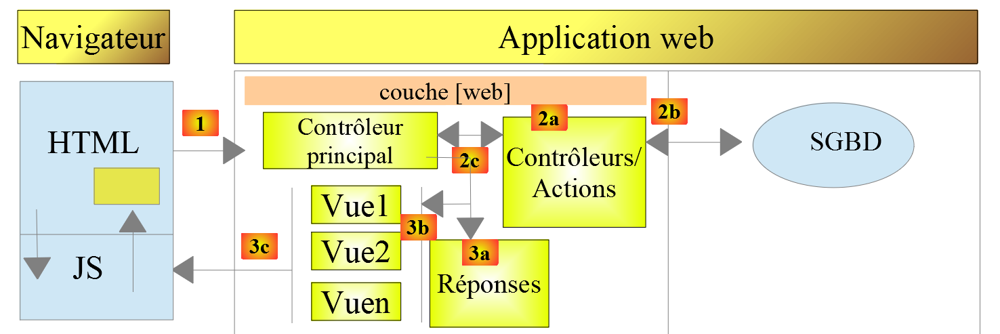
Ci-dessus, les [Contrôleur / Action] intègrent chacun une partie des couches [métier] et [dao]. Dans la couche [web] on a bien une architecture MVC mais l'ensemble de l'application n'a pas une architecture en couches. Ici il n'y a qu'une couche qui fait tout.
Maintenant, considérons une architecture web multicouche :

La couche [web] peut être implémentée sans suivre le modèle MVC. On a bien alors une architecture multicouche mais la couche web n'implémente pas le modèle MVC.
Par exemple, dans le monde .NET la couche [web] ci-dessus peut être implémentée avec ASP.NET Core MVC et on a alors une architecture en couches avec une couche [web] de type MVC. Ceci fait, on peut remplacer cette couche ASP.NET Core MVC par une couche ASP.NET Core [Razor Pages] tout en gardant le reste (métier, DAO, pilote) à l'identique. On a alors une architecture en couches avec une couche [web] qui n'est plus de type MVC.
Dans MVC, nous avons dit que le modèle M était celui de la vue V, c.-à-d. l'ensemble des données affichées par la vue V. Une autre définition du modèle M de MVC est donnée :

Beaucoup d'auteurs considèrent que ce qui est à droite de la couche [web] forme le modèle M du MVC. Pour éviter les ambiguïtés on peut parler :
- du modèle du domaine lorsqu'on désigne tout ce qui est à droite de la couche [web] ;
- du modèle de la vue lorsqu'on désigne les données affichées par une vue V .
23.2. Arborescence du projet
Nous adoptons pour le projet une arborescence reflétant le modèle MVC. Dans [VS Code], le dossier [scripts-web/impots/version-12] contient les éléments suivants :
- [main.php] est le contrôleur principal de notre modèle MVC. C'est le C de MVC ;
- le dossier [Controllers] contient les contrôleurs secondaires. Chacun traite une action particulière. Cette action est indiquée dans l'URL, par exemple […/main.php?action=authentifier-utilisateur]. Avec cette action, le contrôleur principal [main.php] va sélectionner un contrôleur secondaire, ici [AuthentifierUtilisateurController], pour traiter l'action demandée. Ces contrôleurs font aussi partie du C de MVC ;
- le dossier [Responses] contient les classes chargées d'envoyer la réponse au client. Il y a une classe par type de réponse souhaitée :
- [JsonResponse] : pour une réponse JSON ;
- [XmlResponse] : pour une réponse XML ;
- [HtmlResponse] : pour une réponse HTML ;
- le dossier [Views] contient les vues HTML lorsqu'une réponse HTML est souhaitée. C'est le V de MVC. Elles sont activées par la classe [HtmlResponse] qui leur transmet les données à afficher. Ces données sont le modèle de la vue. Selon la terminologie adoptée pour le M, ces données peuvent être le M de MVC ;
- le dossier [Tests] contient des versions de test des vues, qui permettent de régler leur aspect visuel ;
- le dossier [Entities] contient des classes et des énumérations utilisées par les différents contrôleurs ;
- le dossier [Data] contient le fichier de configuration [config.json] et le fichier des logs [logs.txt]. Comme dans les versions précédentes, le fichier [.htaccess] de la version 8 interdit à [Apache] de servir ses fichiers : la configuration contient des mots de passe .
Le cours PHP 7 recopiait dans le dossier de la version 12 les classes des couches [métier] et [dao] (dossier [Model]) et les utilitaires (dossier [Utilities]). Nous ne les recopions pas : comme dans les versions précédentes, ces classes sont chargées à partir des dossiers des versions 5, 8, 9 et 11 où elles ont été écrites.
A l'aide de cette arborescence, on peut décrire le cheminement du traitement d'une action demandée par un client :
- [main.php] reçoit la demande ;
- après avoir fait quelques vérifications préliminaires (l'action fait-elle partie des actions acceptées ?), il transmet la demande au contrôleur secondaire chargé de traiter cette action ;
- le contrôleur secondaire fait ce qu'il a à faire. Dans son travail, il peut avoir besoin des couches [métier] et [dao] ainsi que des entités du dossier [Entities]. Il rend sa réponse au contrôleur principal [main.php] qui l'a activé ;
- selon le type de réponse [JSON, XML, HTML] souhaité par le client, le contrôleur principal [main.php] active l'une des réponses du dossier [Responses] ;
- les réponses [JsonResponse, XmlResponse] envoient respectivement la réponse JSON ou XML au client ;
- la réponse [HtmlResponse] utilise l'une des vues du dossier [Views] pour envoyer une réponse HTML au client ;
- les différents éléments ont accès à la classe [Logger] de la version 9 pour écrire des logs dans le fichier [Data/logs.txt]. Sont logués :
- l'action demandée ;
- la réponse de son contrôleur. Celle-ci est enregistrée au format JSON quel que soit le type [JSON, XML, HTML] demandé ;
- lors d'une erreur fatale (statut HTTP 500 Internal Server Error), le contrôleur principal [main.php] envoie un mail à l'administrateur à l'aide de la classe [SendAdminMail] de la version 9 .
23.3. Les actions de l'application
Le client transmet au serveur web l'action à exécuter sous la forme d'un paramètre [action] dans l'URL [/main.php?action=xxx]. Le cours PHP 7 listait les actions autorisées dans le fichier de configuration, chacune associée au nom de la classe de son contrôleur. Nous utilisons une énumération (PHP 8.1), l'énumération [Action] du dossier [Entities] :
Commentaires
- ligne 9 : l'énumération [Action] est une énumération « adossée » (backed enum) : chacun de ses cas a une valeur, ici de type [string]. Nous avons rencontré les énumérations au chapitre sur les classes ;
- ligne 11 : [init-session] démarre une session de simulations de calculs d'impôts. Cette action indique le type de réponses souhaitées [JSON, XML, HTML] ;
- ligne 12 : une fois le type de session fixé, le client devra s'authentifier avec l'action [authentifier-utilisateur]. Tant qu'il n'est pas authentifié, toutes les autres actions sont interdites à l'exception de [init-session] ;
- ligne 13 : une fois authentifié, le client pourra faire une série de calculs d'impôt avec l'action [calculer-impot] ;
- ligne 14 : à tout moment, le client peut demander à voir la liste des simulations qu'il a faites avec l'action [lister-simulations] ;
- ligne 15 : il pourra en supprimer certaines avec l'action [supprimer-simulation] ;
- ligne 16 : le client termine sa session de simulations avec l'action [fin-session]. A partir de ce moment, il devra s'authentifier de nouveau s'il veut utiliser l'application ;
- ligne 17 : dans l'application HTML, l'action [afficher-calcul-impot] demande l'affichage du formulaire permettant le calcul de l'impôt ;
- lignes 20-23 : une énumération peut avoir des méthodes. Dans une méthode, [$this] désigne le cas de l'énumération sur lequel la méthode est appelée. La méthode [exigeTypeSession] dit si l'action ne peut être exécutée que lorsque le type de la session est connu : c'est le cas de toutes les actions sauf [init-session]. Les cas d'une énumération sont des objets uniques : on les compare avec l'opérateur [===] ;
- lignes 26-32 : la méthode [exigeAuthentification] dit si l'action ne peut être exécutée que par un utilisateur authentifié : c'est le cas de toutes les actions sauf [init-session] et [authentifier-utilisateur]. L'expression [match] admet plusieurs valeurs, séparées par des virgules, dans une même branche .
Ces règles, qui étaient écrites dans le contrôleur principal du cours PHP 7, sont ainsi rassemblées avec la définition des actions.
23.4. Configuration de l'application web
L'application est configurée par le fichier JSON [Data/config.json] suivant :
Commentaires
- ligne 2 : le fichier JSON décrivant la base de données MySQL [dbimpots-2019], celui de la version 8. Le chemin est relatif au dossier [version-12] ;
- lignes 3-33 : les fichiers PHP de l'application. On y trouve d'abord les classes déjà écrites :
- les entités [ExceptionImpots, TaxAdminData, Database] et la classe [Utilitaires] de la version 5 ;
- les couches [dao] et [métier] des versions 8 et 9 ;
- les utilitaires [Logger] et [SendAdminMail] de la version 9 et [XmlUtilitaires] de la version 11 ;
- puis les classes de la version 12, que nous allons présenter. Le fichier PHP 7 contenait aussi les chemins absolus des bibliothèques tierces ([C:/myprograms/laragon-lite/www/vendor/autoload.php]) : le chargeur de classes de [Composer] est désormais chargé directement par [main.php], avec un chemin relatif ;
- lignes 34-39 : l'utilisateur autorisé à utiliser l'application ;
- lignes 40-48 : les coordonnées mail de l'administrateur de l'application. Le mail est envoyé au serveur [Mailpit] qui écoute le port 1025 (cf. version 9) ;
- ligne 49 : le chemin du fichier des logs ;
- lignes 50-54 : les coordonnées du serveur [Redis] qui sert de mémoire de portée [application] (cf. version 10) ;
- lignes 55-59 : associations [vue HTML => tableau des codes d'état menant à cette vue]. Elles sont présentées un peu plus loin ;
- ligne 60 : la vue [vue-erreurs.php] est affichée dans une session HTML à chaque fois qu'il se produit une erreur anormale :
- une application JSON ou XML est habituellement interrogée avec un client programmé. Celui-ci passe au serveur des paramètres qui peuvent être absents ou erronés. L'ensemble des contrôleurs traitent ces cas et renvoient au client des codes d'erreur. Tous les cas d'erreur possibles doivent être traités ;
- avec une application HTML, c'est un peu différent. Utilisée normalement, l'application web n'utilise qu'une partie des cas d'utilisation possibles des clients JSON et XML. Prenons un exemple : l'action [calculer-impot] attend trois paramètres postés (envoyés par un POST) : [marié, enfants, salaire]. Avec un client JSON permettant de taper des URL à la main, on peut demander l'action [calculer-impot] avec un GET plutôt qu'un POST, ou avec un POST sans aucun paramètre posté alors qu'il en faut trois, etc. Le serveur JSON doit traiter tous ces cas. Avec une application web, l'action [calculer-impot] sera demandée à partir d'un formulaire web où aucun des deux cas précédents ne sera possible : l'action [calculer-impot] sera demandée avec un POST et les trois paramètres [marié, enfants, salaire]. Cependant, l'utilisateur peut reproduire certaines erreurs en tapant lui-même des URL dans le navigateur. Par sécurité, on doit gérer ce cas ;
- la vue [vue-erreurs.php] sera affichée à chaque fois qu'un contrôleur secondaire rendra un code d'état incompatible avec l'application web, c.-à-d. un code d'état absent de la clé [vues] du fichier de configuration. Nous optons pour cette solution dans un souci pédagogique. Une autre option possible serait de réafficher la vue actuellement affichée dans le navigateur du client pour que l'utilisateur ait l'impression que le serveur ne répond pas à ses URL fabriquées à la main .
Par rapport au fichier de configuration du cours PHP 7, les clés [rootDirectory] (le dossier racine est maintenant connu de [main.php]), [actions] (remplacée par l'énumération [Action]) et [types] (remplacée par l'énumération [ResponseType] présentée plus loin) ont disparu.
23.5. Outils et bibliothèques
23.5.1. L'outil [curl]
Le cours PHP 7 utilisait l'outil graphique [Postman] pour interroger les différentes URL de l'application web. Nous utilisons l'outil en ligne de commande [curl], présenté au chapitre sur les services web. Il nous permet :
- d'utiliser n'importe quelle URL : celles-ci sont fabriquées à la main ;
- de requêter le serveur web par un GET, POST, PUT, OPTIONS… (options [-X] et [-d]) ;
- de préciser les paramètres du GET (dans l'URL) ou du POST (options [-d] et [--data-urlencode]) ;
- de fixer les entêtes HTTP de la requête (option [-H]) ;
- de recevoir une réponse au format JSON, XML, HTML ;
- d'avoir accès aux entêtes HTTP de la réponse (option [-i]) ;
- de gérer le cookie de session comme un navigateur : l'option [-c cookies.txt] enregistre dans le fichier [cookies.txt] les cookies envoyés par le serveur, l'option [-b cookies.txt] les renvoie au serveur .
Puisque nous fabriquons à la main les URL interrogées, nous allons pouvoir tester tous les cas d'erreur possibles et voir comment le serveur réagit. Rappelons que dans un terminal [PowerShell], il faut taper [curl.exe] plutôt que [curl]. Toutes les commandes de ce chapitre sont tapées dans un terminal ouvert dans un dossier de travail quelconque, où [curl] crée le fichier [cookies.txt].
Pour poster un paramètre dont le nom contient des caractères accentués, comme [marié], nous utiliserons l'option [--data-urlencode "marié=oui"] qui code le nom et la valeur du paramètre ([mari%C3%A9=oui]). Dans l'URL, nous écrirons nous-mêmes le nom codé : [num%C3%A9ro] pour [numéro].
23.5.2. La bibliothèque Symfony / Serializer
Le cours PHP 7 utilisait la bibliothèque [Symfony / Serializer] pour sérialiser en JSON et en XML les réponses du serveur, qui peuvent contenir des objets [Simulation]. Elle avait deux avantages : la même API pour le JSON et le XML ; la sérialisation d'objets aux attributs privés, exposés par des getters.
Nous ne l'utilisons pas dans cette version, bien qu'elle soit installée dans le dossier [vendor] du cours :
- notre classe [Simulation] est une classe [readonly] aux attributs publics (cf. paragraphe suivant). La fonction [json_encode] sérialise directement les attributs publics d'un objet : la sérialisation JSON ne nécessite plus de bibliothèque ;
- pour le XML, nous disposons de la classe [XmlUtilitaires] de la version 11, qui produit des documents XML de la même forme que ceux de la version 11, que les clients XML savent déjà exploiter. Il suffit de lui donner un tableau, après avoir transformé les objets [Simulation] en tableaux associatifs ;
- le serveur n'a jamais à désérialiser du JSON ou du XML en objets, ce qui était l'autre avantage mis en avant par le cours PHP 7 .
La bibliothèque [Symfony / Serializer] n'apporterait donc ici qu'une dépendance de plus. Elle reste un bon choix lorsqu'il faut désérialiser des documents en objets typés ou gérer de nombreux formats.
23.6. Les entités de l'application
Le dossier [Entities] contient deux énumérations, [Action] (déjà présentée) et [ResponseType] (présentée avec les réponses du serveur), et deux classes. La classe [Simulation] encapsule les éléments d'une simulation de calcul d'impôt :
Commentaires
- ligne 9 : la classe est [readonly] (PHP 8.2) : tous ses attributs sont en lecture seule. Une simulation est un objet immuable : une fois construite, elle ne change plus ;
- lignes 13-24 : les attributs sont déclarés et initialisés par la promotion des paramètres du constructeur (PHP 8.0). Ils sont typés : [string] pour le statut marital, [int] pour les autres paramètres et les montants, [float] pour le taux d'imposition ;
- les attributs sont publics : comme ils sont en lecture seule, il n'est plus nécessaire de les protéger par des getters. La classe PHP 7 [Simulation] dérivait de la classe [BaseEntity], avait huit attributs [protected] non typés et huit getters .
La seconde classe, [ControllerResult], représente le résultat qu'un contrôleur secondaire rend au contrôleur principal :
- ligne 13 : le code de statut HTTP de la réponse à envoyer au client ;
- ligne 15 : l'état dans lequel se trouve l'application après l'exécution de l'action ;
- ligne 17 : la réponse proprement dite. Son type dépend de l'action : un message, une liste de messages d'erreur, une simulation, une liste de simulations. Le type [mixed] (PHP 8.0) accepte toute valeur ;
- ligne 19 : les entêtes HTTP à ajouter à la réponse. C'est un paramètre facultatif .
Dans le cours PHP 7, les contrôleurs rendaient le tableau [[$statusCode, $état, $content, $headers]]. Un objet aux attributs nommés et typés est plus sûr : on ne peut pas se tromper dans l'ordre des éléments.
23.7. Les utilitaires de l'application
L'application utilise trois utilitaires déjà présentés :
- la classe [Logger] de la version 9 permet de loguer des événements dans un fichier texte ;
- la classe [SendAdminMail] de la version 9 permet d'envoyer un mail à l'administrateur de l'application ;
- la classe [XmlUtilitaires] de la version 11 permet d'obtenir le document XML d'un tableau .
23.8. Les couches [métier] et [dao]
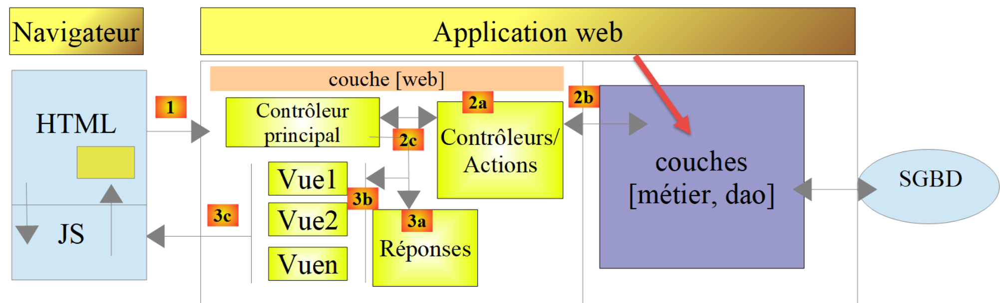
Les classes et interfaces des couches [métier] et [dao] ont toutes été définies et utilisées dans des versions précédentes :
Classe | Rôle |
ExceptionImpots | La classe des exceptions lancées par la couche [dao]. Version 5, dossier [Entities] |
InterfaceServerDao | Interface implémentée par la couche [dao] du serveur. Version 8, dossier [Dao] |
ServerDao | Implémentation de l'interface [InterfaceServerDao] : les données fiscales sont lues dans la base de données. Version 8 |
ServerDaoWithSession | Classe dérivée de [ServerDao] : les données fiscales peuvent être fournies au constructeur. Version 9, dossier [Dao] |
InterfaceServerMetier | Interface implémentée par la couche [métier] du serveur. Version 8, dossier [Metier] |
ServerMetier | Implémentation de l'interface [InterfaceServerMetier] : le calcul de l'impôt. Version 8 |
L'application en cours d'écriture utilise donc beaucoup d'éléments déjà présentés et utilisés :
- les couches [métier] et [dao] ;
- les utilitaires [Logger], [SendAdminMail] et [XmlUtilitaires] ;
- les entités [ExceptionImpots, TaxAdminData, Database] .
Nous allons nous concentrer sur la couche [web] de l'application :
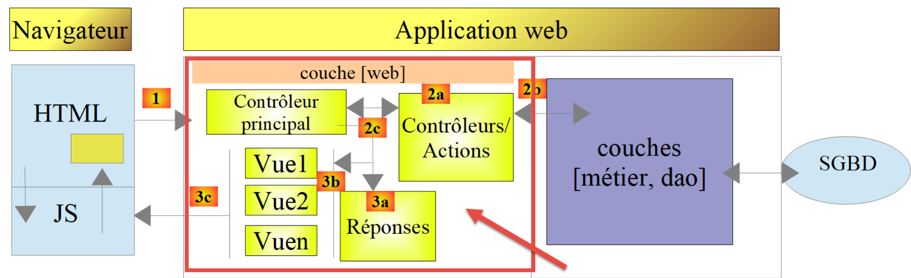
23.9. Le contrôleur principal [main.php]
23.9.1. Introduction
Le contrôleur principal [main.php] est configuré par le fichier [Data/config.json]. Rappelons sa position dans notre architecture MVC :
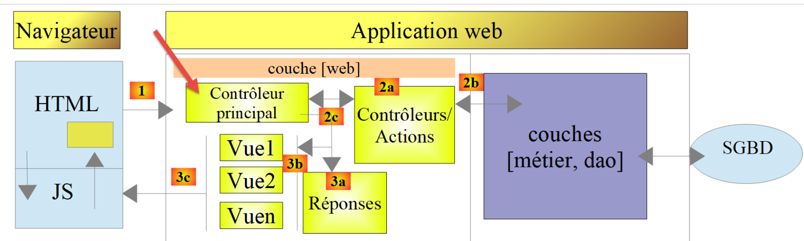
Le contrôleur principal [main.php] est le 1er élément de l'architecture MVC à traiter la requête du client. Il a plusieurs rôles :
- il fait d'abord les vérifications de base :
- est-ce que son fichier de configuration existe et est valide ?
- il charge toutes les dépendances du projet. Cela revient à charger tous les éléments de l'architecture MVC ;
- est-ce que l'action demandée a été précisée ? Si oui, est-elle valide ?
- si l'action demandée est valide, il sélectionne [2a] le contrôleur secondaire qui va la traiter et lui passe les informations dont il a besoin : la configuration de l'application, la requête HTTP, la session ;
- il récupère [2c] la réponse du contrôleur secondaire. Selon le type (JSON, XML, HTML) de réponse demandé par le client, il sélectionne [3a] la réponse (JsonResponse, XmlResponse, HtmlResponse) chargée d'envoyer la réponse au client et lui passe toutes les informations dont elle a besoin (la requête HTTP, la session, la configuration de l'application, la réponse du contrôleur secondaire) .
23.9.2. [main.php] - 1
Le début du contrôleur principal [main.php] est le suivant :
Commentaires
- lignes 10-12 : le contrôleur principal utilise les classes suivantes de la bibliothèque [HttpFoundation] de Symfony :
- [Request] : la requête HTTP en cours de traitement ;
- [Response] : la réponse HTTP au client ;
- [Session] : la session de l'application web ;
- ligne 15 : les erreurs détectées par PHP ne sont pas incluses dans le document envoyé au client : elles iraient corrompre les réponses JSON ou XML. Elles restent consignées dans le journal des erreurs du serveur web (fichier [error.log] d'Apache). Pendant le développement, on peut mettre cette ligne en commentaires : les erreurs PHP apparaissent alors dans les réponses reçues par [curl] ou le navigateur. C'est une aide au débogage. Le script PHP 7 modifiait aussi le niveau de rapport d'erreurs avec [error_reporting(E_ALL && !E_WARNING && !E_NOTICE)], une expression d'ailleurs fausse (il fallait les opérateurs bit à bit [&] et [~]) : nous voulons au contraire n'ignorer aucune erreur ;
- ligne 18 : le dossier racine de l'application, celui du script [main.php]. Les chemins du fichier de configuration sont relatifs à ce dossier. La constante est définie dans l'espace de noms [Application] : elle est donc visible des classes de cet espace de noms, notamment du contrôleur qui calculera l'impôt ;
- ligne 20 : le chemin du fichier de configuration ;
- ligne 23 : on charge le chargeur de classes de [Composer], qui rend disponibles les classes de Symfony et de Predis. Il est chargé avant la lecture de la configuration : la réponse d'erreur envoyée si celle-ci échoue utilise la classe [Response] de Symfony. Le script PHP 7 utilisait ici un chemin absolu ;
- lignes 26-29 : on lit le fichier de configuration. S'il n'existe pas ou ne peut être lu, on envoie au client une réponse d'erreur avec l'état [131], par la fonction [sendConfigError] ;
- lignes 30-34 : on décode le JSON du fichier de configuration. Avec l'option [JSON_THROW_ON_ERROR], la fonction [json_decode] lance une exception [JsonException] si le JSON est invalide. On envoie alors une réponse d'erreur avec l'état [132]. Depuis PHP 8.0, la clause [catch] peut omettre la variable de l'exception lorsqu'elle n'est pas utilisée : [catch (\JsonException)] ;
On a ici un fichier de configuration existant et syntaxiquement correct. Il faudrait de plus tester que les clés attendues dans ce fichier sont bien présentes. Nous considérerons que cela fait partie du travail normal de débogage du développeur.
La fonction [sendConfigError] est définie à la fin du script :
- ligne 124 : le type de retour [never] (PHP 8.1) indique que la fonction ne rend jamais la main à l'appelant : elle se termine toujours par [exit] ou par une exception. Un analyseur de code comme l'extension [PHP Intelephense] de [VS Code] sait alors que le code qui suit un appel à [sendConfigError] n'est exécuté que si la configuration a pu être lue ;
- ligne 126 : toutes les réponses faites par l'application web auront trois clés :
- [action] : l'action demandée par le client (ici inconnue) ;
- [état] : l'état de l'application après exécution de cette action ;
- [réponse] : la réponse du serveur web ;
- ligne 127 : comme les classes de l'application ne sont pas encore chargées, on construit directement une réponse Symfony, avec le statut [500 Internal Server Error] ;
- ligne 128 : la réponse est un document JSON codé en UTF-8 ;
- ligne 129 : la réponse est envoyée au client .
23.9.3. Tests [curl] - 1
Nous allons vérifier le comportement du serveur lorsque le fichier de configuration est absent ou incorrect. Renommons [Data/config.json] en [Data/config2.json] puis demandons l'URL du contrôleur principal :
- ligne 1 : l'option [-i] demande à [curl] d'afficher les entêtes HTTP de la réponse ;
- ligne 2 : le serveur a renvoyé le statut [500 Internal Server Error] ;
- ligne 8 : la réponse est un document JSON ;
- ligne 10 : le document JSON de la réponse. C'est bien celui que nous attendions .
Redonnons au fichier son nom [config.json], puis rendons-le syntaxiquement incorrect, par exemple en supprimant tout ce qui suit sa deuxième ligne. Nous n'affichons plus les entêtes HTTP :
Ce premier test nous a permis de voir qu'on peut envoyer tout type de requête au serveur testé et qu'on a la totalité de la réponse : entêtes HTTP et document qui suit ces entêtes. N'oublions pas de rétablir le contenu du fichier [config.json].
23.9.4. [main.php] – 2
Nous reprenons l'étude du contrôleur principal [main.php] :
Commentaires
- lignes 37-39 : on inclut toutes les dépendances de l'application. Nous avons déjà rencontré ce code plusieurs fois ;
- ligne 42 : on encapsule toutes les informations de la requête du client dans l'objet Symfony [Request] ;
- lignes 44-45 : on démarre une nouvelle session ou on récupère la session existante si le client a envoyé un cookie de session. La session est démarrée après le chargement des classes de l'application : elle contiendra des objets [Simulation], et la classe [Simulation] doit être connue au moment où PHP reconstruit les objets de la session ;
- lignes 48-59 : on essaie de créer l'objet [Logger] qui va nous permettre de loguer des événements dans le fichier [Data/logs.txt]. Cette création peut échouer : le constructeur de [Logger] lance alors une exception [ExceptionImpots] ;
- lignes 52-56 : la réponse d'erreur, avec l'état [133]. Le message reprend le nom du fichier de logs donné dans la configuration et non le chemin complet : celui-ci révélerait au client l'organisation des dossiers du serveur ;
- ligne 57 : la réponse est envoyée par un objet [JsonResponse], sans journal puisqu'il n'a pu être créé. Les classes de l'application sont maintenant chargées : on peut les utiliser ;
- ligne 58 : on arrête le script .
Toutes les réponses envoyées au client implémentent l'interface [InterfaceResponse] suivante, du dossier [Responses] :
- lignes 23-31 : l'interface [InterfaceResponse] a une unique méthode [send] pour envoyer la réponse au client ;
- lignes 16-22 : la signification des différents paramètres de la méthode [send] ;
- lignes 27-29 : les paramètres [$statusCode], [$content] et [$headers] contiennent le résultat du contrôleur secondaire et les clés [action, état] ajoutées par le contrôleur principal. Cependant la réponse peut avoir besoin d'autres informations. Aussi lui donne-t-on les trois premiers paramètres, qui lui donnent accès à la totalité des informations concernant la requête, la session, la configuration ;
- ligne 30 : la réponse a besoin du [Logger] car elle va loguer la réponse envoyée au client. Le type [?Logger] indique que le paramètre peut valoir [null] : c'est le cas lorsque le journal n'a pu être créé. Dans la signature PHP 7, les paramètres [Request $request = NULL] et [Logger $logger = NULL] étaient implicitement nullables : cette écriture est obsolète depuis PHP 8.4. De plus, déclarer un paramètre facultatif avant des paramètres obligatoires est obsolète depuis PHP 8.0 .
La classe [JsonResponse] implémente l'interface [InterfaceResponse] de la façon suivante :
Commentaires
- ligne 13 : la classe étend la classe abstraite [ParentResponse], qui implémente l'interface [InterfaceResponse]. Tous les types de réponse étendent cette classe. C'est cette classe parent qui envoie la réponse au client. C'est parce que ce code est commun à tous les types de réponse qu'il a été factorisé dans une classe parent. Notre classe [JsonResponse] n'est pas la classe [JsonResponse] de Symfony : elle est dans l'espace de noms [Application] et nous n'importons pas la classe de Symfony ;
- ligne 15 : l'attribut [Override] (PHP 8.3) indique que la méthode [send] implémente une méthode d'une classe parent ou d'une interface. Si ce n'était pas le cas (faute de frappe dans le nom par exemple), PHP signalerait une erreur ;
- ligne 26 : la réponse [$content] est sérialisée en JSON. Les options de [json_encode] sont définies une fois pour toutes dans la classe parent. La fonction [json_encode] sérialise un objet [Simulation] sous la forme d'un objet JSON ayant pour clés les noms de ses attributs publics ;
- ligne 28 : on demande à la classe parent d'envoyer la réponse au client, en précisant le type [application/json] du document ;
- ligne 30 : on logue la réponse JSON. L'opérateur nullsafe [?->] n'appelle la méthode [write] que si [$logger] n'est pas [null] .
Le code de la classe parent [ParentResponse] est le suivant :
Commentaires
- ligne 13 : la classe est abstraite : elle ne peut pas être instanciée. Elle implémente l'interface [InterfaceResponse] sans définir la méthode [send], qui le sera par les classes filles. Dans le cours PHP 7, [ParentResponse] était une classe ordinaire que les classes filles étendaient tout en implémentant l'interface ;
- ligne 16 : les options de [json_encode] communes à toutes les réponses. Depuis PHP 8.3, une constante de classe peut être typée :
- [JSON_UNESCAPED_UNICODE] : les caractères accentués sont écrits tels quels et non sous la forme [\u00e9] ;
- [JSON_UNESCAPED_SLASHES] : le caractère [/] n'est pas codé [\/] ;
- [JSON_PRESERVE_ZERO_FRACTION] : un réel est toujours écrit avec un point décimal (un taux nul est écrit [0.0]) ;
- [JSON_THROW_ON_ERROR] : une erreur de sérialisation lance une exception [JsonException] ;
- ligne 24 : la méthode [sendResponse] envoie la réponse au client. On notera que le corps [$body] de la réponse est de type [string] et donc prêt à être envoyé ;
- ligne 27 : le constructeur de la classe Symfony [Response] reçoit le corps, le statut et les entêtes de la réponse ;
- ligne 29 : le type du document envoyé, codé en UTF-8 ;
- ligne 31 : envoi de la réponse au client ;
- ligne 35 : la méthode [log] logue la réponse en JSON. Elle sera utilisée par les réponses XML et HTML ;
- lignes 42-49 : la méthode statique [toArray] rend la donnée [$data] dans laquelle les objets ont été remplacés par le tableau associatif de leurs attributs publics. Elle sera utilisée par la réponse XML :
- l'expression [match (true)] choisit la première branche dont la condition est vraie ;
- ligne 45 : un objet est remplacé par le tableau de ses attributs, rendu par la fonction [get_object_vars]. Appelée hors de la classe de l'objet, elle ne rend que ses attributs publics. Les attributs peuvent eux-mêmes être des objets : on rappelle donc [toArray] ;
- ligne 46 : chaque élément d'un tableau est transformé par [toArray]. La syntaxe [self::toArray(...)] (PHP 8.1) crée une fonction anonyme (une [Closure]) à partir de la méthode [toArray] : c'est la syntaxe des callables de première classe. Avec un seul tableau, la fonction [array_map] conserve les clés du tableau ;
- ligne 47 : les autres valeurs (chaînes, nombres) sont rendues telles quelles .
23.9.5. Tests [curl] – 2
Modifions le fichier [config.json] de la façon suivante : ["logsFilename": "Data"]. Le fichier de logs est désormais [Data], qui est un dossier. La création du fichier [Data] devrait donc échouer :
- ligne 2 : le statut [500 Internal Server Error] ;
- ligne 7 : le cookie de session : la session a été démarrée avant la création du journal ;
- ligne 12 : la réponse JSON attendue .
Rétablissons la valeur [Data/logs.txt] de la clé [logsFilename].
23.9.6. [main.php] – 3
Continuons l'étude du contrôleur principal [main.php] :
Commentaires
- ligne 62 : on logue le fait qu'on a une nouvelle requête. On ne pouvait pas le faire avant car on n'était pas sûr d'avoir un fichier de logs valide ;
- ligne 65 : le paramètre [action] doit faire partie de l'URL sous la forme [main.php?action=uneAction]. Il fait alors partie des paramètres [$request->query] de l'URL. La méthode [getString] de Symfony rend la valeur du paramètre sous forme de chaîne de caractères, ou la chaîne vide si le paramètre est absent ;
- ligne 66 : l'action demandée est loguée ;
- ligne 68 : la méthode statique [tryFrom] d'une énumération adossée rend le cas de l'énumération dont la valeur est [$nomAction], ou [null] si aucun cas n'a cette valeur. La méthode [from] ferait la même chose mais lancerait une exception [ValueError] dans le second cas ;
- lignes 70-78 : les vérifications préliminaires. Leur résultat [$erreur] est soit un tableau [état, message] décrivant la première erreur rencontrée, soit [null] si l'action peut être exécutée. Les conditions sont évaluées dans l'ordre :
- ligne 71 : le paramètre [action] est absent de l'URL : état [101] ;
- ligne 72 : l'action est inconnue : état [102] ;
- ligne 73 : l'application fournit trois types de réponse (JSON, XML, HTML). Ce type est fixé par l'action [init-session], qui le place dans la session, associé à la clé [type]. En dehors de l'action [init-session], toute action doit se dérouler avec une clé [type] dans la session : état [103] sinon ;
- ligne 75 : en dehors des actions [init-session] et [authentifier-utilisateur], toutes les actions doivent se faire après authentification. Celle-ci se fait à l'aide de l'action [authentifier-utilisateur] qui, si l'authentification réussit, met une clé [user] dans la session : état [104] sinon ;
- ligne 77 : aucune erreur ;
- lignes 79-82 : si l'action demandée ou son contexte d'exécution sont erronés, on prépare la réponse d'erreur sans l'envoyer : statut [400 Bad Request], état, liste d'erreurs (avec ici une seule erreur). La déstructuration [[$état, $message] = $erreur] affecte en une instruction les deux éléments du tableau [$erreur] ;
- lignes 85-93 : on a une action valide. On instancie le contrôleur secondaire qui va la traiter. Le cours PHP 7 construisait le nom de la classe du contrôleur à partir de la configuration ([__NAMESPACE__ . $config["actions"][$action]]) puis l'instanciait avec [new $controller()]. L'expression [match] sur les cas de l'énumération [Action] est plus sûre : l'analyseur de code de [VS Code] vérifie les noms des classes, et si on ajoute un cas à l'énumération sans l'ajouter ici, [match] lancera une exception [UnhandledMatchError] au lieu d'instancier une classe au hasard ;
- ligne 94 : on logue le nom du contrôleur secondaire, pour vérification en cours de développement. Depuis PHP 8.0, [$objet::class] donne le nom complet de la classe d'un objet ;
- ligne 95 : le contrôleur secondaire est exécuté. Il rend un objet [ControllerResult]. Nous reviendrons sur les contrôleurs secondaires un peu plus loin ;
- on arrive ensuite à la ligne 99 soit parce qu'il y a eu erreur, soit après exécution d'un contrôleur. Dans les deux cas, l'objet [$résultat] contient tout ce qui est nécessaire à l'élaboration de la réponse au client ;
- ligne 99 : la réponse au client est un tableau à trois clés [action, état, réponse]. La clé [action] permettra de mieux suivre les logs du fichier [logs.txt]. La clé [état] aura deux rôles :
- elle permettra aux clients JSON et XML de connaître l'état dans lequel l'action exécutée a mis l'application web ;
- dans le cas d'une réponse HTML, elle permettra de choisir la vue HTML qu'il faut envoyer au navigateur client ;
- lignes 101-104 : cas particulier du code de statut [500 Internal Server Error]. Si un contrôleur a mis ce code de statut, c'est que l'application ne peut pas fonctionner. C'est par exemple le cas du calcul de l'impôt si le SGBD ou le serveur [Redis] n'a pas été lancé ou ne répond plus. On envoie alors un mail à l'administrateur de l'application pour l'avertir, avec la classe [SendAdminMail] de la version 9 ;
- ligne 107 : on détermine le type [JSON, XML, HTML] de la réponse. Si l'action [init-session] a été exécutée avec succès, ce type est dans la session, associé à la clé [type]. Si ce n'est pas le cas, la méthode [get] de la session rend la valeur par défaut [""], [tryFrom] rend [null] et l'opérateur [??] choisit le type JSON ;
- lignes 109-117 : la méthode [response] de l'énumération [ResponseType], présentée plus loin, rend l'objet [JsonResponse], [XmlResponse] ou [HtmlResponse] qui convient au type de la session. Sa méthode [send] envoie la réponse au client. Les trois classes implémentant la même interface [InterfaceResponse], leurs méthodes [send] ont toutes la même signature ;
- ligne 119 : le contrôleur principal a terminé son travail. Le script PHP 7 fermait ici le fichier de logs : notre classe [Logger] n'a plus de méthode [close] .
23.9.7. Tests [curl] – 3
On va tester divers cas d'erreur du paramètre [action] de l'URL :
- lignes 1-2 : une requête sans le paramètre [action] dans l'URL : état [101] ;
- lignes 4-5 : une requête avec un paramètre [action] invalide : état [102] ;
- lignes 7-8 : une action reconnue mais le type (json, xml, html) de la session n'a pas encore été précisé : état [103] .
Dans ces trois cas, la clé [réponse] est une liste d'erreurs, ici avec une seule erreur.
23.10. Les contrôleurs secondaires
Chaque action est exécutée par un des contrôleurs du dossier [Controllers] :

Dans l'architecture générale de l'application ci-dessus, les contrôleurs secondaires sont en [2a]. Chaque contrôleur implémente l'interface [InterfaceController] suivante :
Commentaires
- ligne 20 : tous les contrôleurs secondaires sont exécutés via la méthode [execute]. On passe à cette méthode les informations connues du contrôleur principal :
- [array $config] : la configuration de l'application ;
- [Request $request] : la requête HTTP en cours de traitement ;
- [Session $session] : la session courante de l'application web ;
- la méthode [execute] rend un objet [ControllerResult] : le code de statut HTTP de la réponse, l'état dans lequel se trouve l'application à la fin de l'exécution, la réponse à envoyer au client, les entêtes HTTP à ajouter à la réponse .
La méthode PHP 7 avait un quatrième paramètre [array $infos = NULL], prévu « par prudence » et jamais utilisé : nous l'avons supprimé. Chaque contrôleur secondaire est appelé par le code suivant du contrôleur principal :
23.11. Les actions
Nous passons maintenant en revue les différentes actions possibles du service web :
Action | Rôle | Contexte d'exécution |
init-session | Sert à fixer le type (json, xml, html) des réponses souhaitées | Requête GET main.php?action=init-session&type=x Peut être émise à tout moment |
authentifier-utilisateur | Autorise ou non un utilisateur à se connecter | Requête POST main.php?action=authentifier-utilisateur La requête doit avoir deux paramètres postés [user, password] Ne peut être émise que si le type de la session (json, xml, html) est connu |
calculer-impot | Fait une simulation de calcul d'impôt | Requête POST main.php?action=calculer-impot La requête doit avoir trois paramètres postés [marié, enfants, salaire] Ne peut être émise que si le type de la session est connu et l'utilisateur authentifié |
lister-simulations | Demande à voir la liste des simulations opérées depuis le début de la session | Requête GET main.php?action=lister-simulations La requête n'accepte aucun autre paramètre Ne peut être émise que si le type de la session est connu et l'utilisateur authentifié |
supprimer-simulation | Supprime une simulation de la liste des simulations | Requête GET main.php?action=supprimer-simulation&numéro=x La requête n'accepte aucun autre paramètre Ne peut être émise que si le type de la session est connu et l'utilisateur authentifié |
fin-session | Termine la session de simulations | Requête GET main.php?action=fin-session Techniquement l'ancienne session web est supprimée et une nouvelle session est créée Ne peut être émise que si le type de la session est connu et l'utilisateur authentifié |
afficher-calcul-impot | Affiche la vue du calcul de l'impôt (application HTML) | Requête GET main.php?action=afficher-calcul-impot Ne peut être émise que si le type de la session est connu et l'utilisateur authentifié |
Tous les contrôleurs secondaires procèdent de la même façon :
- ils vérifient leurs paramètres. Ceux-ci sont trouvés dans l'objet [$request->query] pour les paramètres présents dans l'URL et dans l'objet [$request->request] pour ceux qui sont postés (requête POST) ;
- un contrôleur s'apparente à une fonction ou méthode qui vérifie la validité de ses paramètres. Pour le contrôleur c'est cependant un peu plus compliqué :
- les paramètres attendus peuvent être absents ;
- les paramètres attendus sont tous des chaînes de caractères, alors qu'une fonction peut fixer le type de ses paramètres. Si le paramètre attendu est un nombre, alors il faut vérifier que la chaîne du paramètre est bien celle d'un nombre ;
- une fois vérifié que les paramètres attendus sont présents et syntaxiquement corrects, il faut vérifier qu'ils sont valides dans le contexte d'exécution du moment. Ce contexte est présent dans la session. L'authentification est un exemple de contexte d'exécution : certaines actions ne doivent être traitées qu'une fois le client authentifié. Une clé dans la session indique si cette authentification a eu lieu ou pas ;
- une fois les vérifications précédentes faites, le contrôleur secondaire peut travailler. Ce travail de vérification des paramètres est très important. On ne peut pas accepter qu'un client nous envoie n'importe quoi à n'importe quel moment de la vie de l'application. On doit contrôler totalement la vie de celle-ci ;
- une fois son travail fait, le contrôleur secondaire rend l'objet [ControllerResult] attendu par le contrôleur principal qui l'a appelé .
Nous allons maintenant passer en revue les différents contrôleurs, ou ce qui revient au même, les différentes actions qui rythment la vie de l'application web.
23.11.1. L'action [init-session]
L'action [init-session] est traitée par le contrôleur [InitSessionController] suivant :
Commentaires
- on attend une requête [GET main.php?action=init-session&type=xxx] ;
- ligne 14 : la classe implémente l'interface [InterfaceController]. Elle est [final] : elle ne peut pas être dérivée ;
- lignes 20-23 : on vérifie que la requête est une requête GET avec deux paramètres dans l'URL. Si ce n'est pas le cas, on rend un résultat d'erreur au contrôleur principal, avec l'état [701]. La méthode [getMethod] de Symfony rend le nom de la méthode HTTP en majuscules : il n'est plus utile de le passer en minuscules comme le faisait le script PHP 7 ;
- lignes 25-27 : on vérifie que le paramètre [type] est bien présent dans l'URL. Si ce n'est pas le cas, on rend un résultat d'erreur avec l'état [702] ;
- ligne 29 : on note le type de la session ;
- lignes 30-32 : on vérifie que le type de la session est l'un des termes (json, xml, html), c.-à-d. la valeur d'un des cas de l'énumération [ResponseType]. Si ce n'est pas le cas, on rend un résultat d'erreur avec l'état [703] ;
- ligne 34 : le type de la session est mis dans la session de l'application web ;
- ligne 36 : le contrôleur a fini son travail. On rend un résultat de succès au contrôleur principal, avec l'état [700] .
Chaque cas d'erreur conduit à un [return] immédiat. Le script PHP 7 utilisait une variable booléenne [$erreur] testée à chaque étape : le code est maintenant plus court et plus lisible. Rappelons ce que fait le contrôleur principal de la réponse des contrôleurs secondaires : il ajoute à la réponse les clés [action] et [état] et l'envoie en instanciant l'une des classes [JsonResponse, XmlResponse, HtmlResponse] selon le type (json, xml, html) de la session en cours.
Dans la suite, nous ferons des tests [curl] dans le cadre d'une session de simulations de type [json].
23.11.2. Tests [curl]
- lignes 1-2 : l'action [init-session] sans le paramètre [type] : la requête n'a pas les deux paramètres attendus, état [701] ;
- lignes 4-5 : l'action [init-session] avec un paramètre [typ] au lieu de [type] : état [702] ;
- lignes 7-8 : l'action [init-session] avec un paramètre [type] incorrect : état [703] ;
- lignes 10-20 : l'action [init-session] avec le type [json] : état [700] .
Les options [-c cookies.txt -b cookies.txt] font que [curl] gère le cookie de session comme un navigateur. Le cookie a été envoyé par le serveur dans sa réponse à la 1re requête (lignes 1-2) ; [curl] l'a enregistré dans le fichier [cookies.txt] et le renvoie à chaque requête. Le serveur ne l'envoie plus (lignes 11-18) : il ne le fait qu'au début d'une nouvelle session. Le fichier [cookies.txt] contient maintenant :
23.11.3. L'action [authentifier-utilisateur]
L'action [authentifier-utilisateur] est exécutée par le contrôleur [AuthentifierUtilisateurController] suivant :
Commentaires
- on attend une requête [POST main.php?action=authentifier-utilisateur] avec deux paramètres postés [user, password] ;
- lignes 20-23 : on vérifie qu'on a une requête POST avec un unique paramètre dans l'URL. Si ce n'est pas le cas, on rend un résultat d'erreur avec l'état [201] ;
- ligne 26 : l'état des erreurs sur les paramètres postés part de la valeur 210 ;
- lignes 28-31 : on vérifie la présence du paramètre [user] dans les valeurs postées. S'il n'est pas présent, on note l'erreur et on ajoute 2 à l'état ;
- lignes 33-36 : on vérifie la présence du paramètre [password]. S'il n'est pas présent, on note l'erreur et on ajoute 4 à l'état. L'état vaut donc 212 si seul [user] manque, 214 si seul [password] manque, 216 si les deux manquent ;
- lignes 38-40 : si l'une des valeurs postées est manquante, on rend un résultat d'erreur dont la réponse est la liste des erreurs ;
- lignes 41-42 : les identifiants postés ;
- lignes 44-47 : on vérifie que le couple [[$user, $password]] est présent dans le tableau [$config["users"]] du fichier de configuration. La fonction [array_any] (PHP 8.4) rend [true] si l'un au moins des éléments du tableau vérifie la condition exprimée par la fonction fléchée. Le mot de passe est comparé avec la fonction [hash_equals], dont le temps d'exécution ne dépend pas de la position du premier caractère différent : un attaquant ne peut pas deviner le mot de passe caractère par caractère en mesurant les temps de réponse. Le script PHP 7 utilisait une boucle [while] ;
- lignes 48-51 : si l'utilisateur n'est pas trouvé, on rend un résultat d'erreur avec le statut HTTP [401 Unauthorized] et l'état [221]. Le message PHP 7 contenait le mot de passe saisi : un mot de passe ne doit jamais être renvoyé au client, ni écrit dans les logs ;
- ligne 53 : l'authentification a réussi. On le note dans la session en y plaçant la clé [user], avec pour valeur l'identifiant de l'utilisateur. C'est la présence de cette clé qui indique une authentification réussie ;
- ligne 55 : on rend un résultat de réussite au contrôleur principal, avec l'état [200] .
23.11.4. Tests [curl]
Nous procédons aux tests du contrôleur [AuthentifierUtilisateurController] en mode JSON, dans la session ouverte précédemment :
- lignes 1-2 : avant toute authentification, on demande un calcul d'impôt. L'option [-d] fait de la requête un POST. Le contrôleur principal refuse l'action : état [104] ;
- lignes 4-5 : l'action [authentifier-utilisateur] avec un GET alors qu'il faut un POST : état [201] ;
- lignes 7-8 : un POST (option [-X POST]) sans paramètres postés : état [216] ;
- lignes 10-11 : un POST avec le seul paramètre [password] : état [212]. Avec l'option [-d], les paramètres sont postés comme le fait un formulaire HTML : le corps de la requête est la chaîne [password=x] et l'entête [Content-Type] vaut [application/x-www-form-urlencoded] ;
- lignes 13-14 : un POST avec le seul paramètre [user] : état [214] ;
- lignes 16-26 : un POST avec des identifiants incorrects : état [221]. On remarquera le statut [401 Unauthorized] de la réponse (ligne 17) ;
- lignes 28-38 : un POST avec des identifiants valides : état [200] et statut [200 OK] (ligne 29) .
23.11.5. L'action [calculer-impot]
L'action [calculer-impot] est traitée par le contrôleur [CalculerImpotController] suivant :
1 2 3 4 5 6 7 8 9 10 11 12 13 14 15 16 17 18 19 20 21 22 23 24 25 26 27 28 29 30 31 32 33 34 35 36 37 38 39 40 41 42 43 44 45 46 47 48 49 50 51 52 53 54 55 56 57 58 59 60 61 62 63 64 65 66 67 68 69 70 71 72 73 74 75 76 77 78 79 80 81 82 83 84 85 86 87 88 89 90 91 92 93 94 95 96 97 98 99 100 101 102 103 104 105 106 107 108 109 110 111 112 113 114 115 | |
Commentaires
- la requête attendue est [POST main.php?action=calculer-impot] avec trois paramètres postés [marié, enfants, salaire] :
- [marié] doit avoir sa valeur dans [oui, non] ;
- [enfants, salaire] doivent être des entiers positifs ou nuls ;
- lignes 13-16 : comme dans la version 10, on utilise la bibliothèque [Predis] et la couche [dao] de la version 9, sous l'alias [ServerDaoWithRedis] ;
- lignes 25-29 : on vérifie qu'on a bien un POST avec un unique paramètre dans l'URL. Si ce n'est pas le cas, un résultat d'erreur est rendu au contrôleur principal, avec l'état [301] ;
- lignes 32-33 : on va cumuler les messages d'erreur dans le tableau [$erreurs]. L'état part de la valeur 310 et chaque erreur lui ajoute une valeur ;
- lignes 35-44 : on vérifie la présence du paramètre [marié] (+2 s'il manque) puis que sa valeur est dans [oui, non] (+4 sinon) ;
- lignes 47-60 : les paramètres [enfants] et [salaire] sont vérifiés par la même boucle. Le tableau parcouru associe à chaque paramètre le couple des valeurs ajoutées à l'état lorsque le paramètre manque ou est invalide : (8, 9) pour [enfants], (16, 17) pour [salaire]. La déstructuration [[$manquant, $invalide]] se fait directement dans l'instruction [foreach]. Le script PHP 7 écrivait deux fois le même code ;
- lignes 48-52 : le paramètre est absent : l'instruction [continue] passe au paramètre suivant ;
- lignes 54-59 : la valeur doit être une suite d'au moins un chiffre. Si c'est le cas, elle est convertie en entier et mémorisée dans le tableau [$valeurs] ;
- lignes 62-64 : s'il y a eu des erreurs, on rend un résultat dont la réponse est la liste des erreurs ;
- ligne 65 : on a des paramètres valides. On peut calculer l'impôt. Il faut pour cela construire les couches [dao] et [métier] qui savent faire ce calcul ;
- lignes 68-79 : on crée un client [Redis] et on se connecte tout de suite au serveur. Si on n'a pas pu se connecter au serveur [Redis], on rend un résultat avec le statut [500 Internal Server Error] et l'état [350] ;
- lignes 81-98 : construction de la couche [dao] :
- ligne 82 : on regarde si le serveur [Redis] a la clé [taxAdminData]. Cette clé représente les données de l'administration fiscale. La méthode [get] de [Predis] rend [null] si la clé n'existe pas ;
- ligne 85 : la clé n'existe pas : les données fiscales doivent être cherchées dans la base de données. Le chemin du fichier de description de la base est relatif au dossier racine de l'application, connu grâce à la constante [ROOT_DIRECTORY] définie par [main.php] ;
- ligne 86 : les données récupérées en base sont mises dans la mémoire [Redis] avec la clé [taxAdminData], sous la forme de leur chaîne JSON ;
- lignes 89-90 : si la clé [taxAdminData] existe dans la mémoire [Redis], les données fiscales sont passées directement au constructeur de la couche [dao] ;
- lignes 92-94 : si la recherche en base s'est mal passée, on rend un résultat avec le statut [500 Internal Server Error], l'état [341] et le message de l'exception lancée par la couche [dao]. Le listing du cours PHP 7 montrait ici l'état 340, alors que son code source, sa configuration (qui associe l'état 341 à la vue du calcul de l'impôt) et son texte utilisaient 341. Nous avons retenu 341 : l'état 340 est déjà l'état d'une requête dont les trois paramètres postés sont invalides (310 + 4 + 9 + 17) ;
- lignes 95-98 : la clause [finally] est exécutée dans tous les cas, qu'il y ait eu exception ou non, et même si le bloc [catch] se termine par un [return]. On y ferme la connexion au serveur [Redis] ;
- ligne 100 : la couche [métier] est créée et calcule l'impôt. Le résultat est le tableau [impôt, surcôte, décôte, réduction, taux] ;
- ligne 102 : avec le résultat du calcul, un objet [Simulation] est créé. Les trois premiers arguments sont positionnels. L'opérateur [...] décompose ensuite le tableau associatif [$résultat] : depuis PHP 8.1, ses clés deviennent des arguments nommés, ici [impôt, surcôte, décôte, réduction, taux], les noms des derniers paramètres du constructeur ;
- ligne 104 : la simulation qui vient d'être construite est ajoutée à la liste des simulations déjà calculées, qui se trouve dans la session. Le second paramètre de la méthode [get] de la session est la valeur rendue si la clé est absente : une liste vide si aucune simulation n'a encore été faite. La nouvelle liste est construite par décomposition de l'ancienne liste, suivie de la nouvelle simulation, puis remise en session ;
- ligne 106 : on rend au contrôleur principal la simulation, avec l'état [300] ;
- ligne 111 : le message d'erreur d'un pilote de SGBD peut ne pas être codé en UTF-8 (cf. version 8). Il ne pourrait alors pas être mis dans une chaîne JSON. Le script PHP 7 utilisait la fonction [utf8_encode], obsolète depuis PHP 8.2 ; nous utilisons [mb_convert_encoding] .
23.11.6. Tests [curl]
Nous procédons aux tests du contrôleur [CalculerImpotController] en mode JSON, l'utilisateur étant authentifié :
- lignes 1-2 : on fait une requête GET au lieu de POST : état [301] ;
- lignes 4-5 : une requête POST avec les trois paramètres [marié, enfants, salaire] présents et tous invalides : état 310 + 4 + 9 + 17 = 340 ;
- lignes 7-8 : seul le paramètre [salaire] est posté et de plus il est invalide : état 310 + 2 + 8 + 17 = 337 ;
- lignes 10-11 : un calcul d'impôt avec des paramètres valides : état [300]. La réponse est l'objet JSON de la simulation. On retrouve l'impôt de 2814 euros de l'exemple officiel de 2019 pour un couple avec deux enfants et un salaire de 55555 euros ;
- lignes 13-14 : un second calcul d'impôt .
On remarquera que l'état ne désigne pas toujours une combinaison unique d'erreurs : 8 + 17 = 9 + 16. L'état 337 est aussi celui d'une requête où manquent [marié] et [salaire] et où [enfants] est invalide. C'est la liste des messages d'erreur qui donne la description précise des erreurs.
Simulons maintenant une panne du serveur [Redis]. Plutôt que d'arrêter le serveur, nous indiquons dans [config.json] un port où aucun serveur n'écoute : ["port": 6380]. Après une nouvelle authentification, une demande de calcul donne la réponse suivante :
- ligne 5 : le statut [500 Internal Server Error] ;
- ligne 14 : l'état [350] et le message de l'exception lancée par [Predis] .
Un mail a été envoyé à l'administrateur de l'application : on peut le voir dans l'interface web de [Mailpit] (URL [http://localhost:8025]). Il a pour sujet [plantage du serveur de calcul d'impôts] et pour texte la réponse JSON envoyée au client. N'oublions pas de rétablir le port 6379.
23.11.7. L'action [lister-simulations]
L'action [lister-simulations] est traitée par le contrôleur secondaire [ListerSimulationsController] suivant :
Commentaires
- requête [GET main.php?action=lister-simulations] ;
- lignes 20-23 : on vérifie qu'on a une requête GET avec un unique paramètre. Si ce n'est pas le cas, un résultat d'erreur est rendu au contrôleur principal, avec l'état [501] ;
- ligne 25 : on rend au contrôleur principal la liste des simulations trouvée dans la session, ou une liste vide si la session n'en contient pas, avec l'état [500]. Le cours PHP 7 déclarait la classe sans [implements InterfaceController] : un oubli, réparé ici .
23.11.8. Tests [curl]
Nous allons faire deux tests, un d'erreur et un réussi :
- lignes 1-2 : une requête GET avec un paramètre [param1] en trop dans l'URL : état [501] ;
- lignes 4-5 : une requête valide : état [500]. La réponse est la liste JSON des deux simulations faites précédemment .
23.11.9. L'action [supprimer-simulation]
L'action [supprimer-simulation] est traitée par le contrôleur secondaire [SupprimerSimulationController] suivant :
Commentaires
- requête [GET main.php?action=supprimer-simulation&numéro=x] ;
- lignes 20-22 : on vérifie qu'on a une requête GET avec deux paramètres. Sinon l'état est [602] ;
- lignes 24-26 : on vérifie que le paramètre [numéro] existe dans les paramètres de l'URL. Sinon l'état est [604] ;
- lignes 28-31 : on vérifie que la valeur du paramètre [numéro] est syntaxiquement correcte : un entier positif ou nul. Sinon l'état est [612] ;
- lignes 33-37 : on vérifie que la simulation n° [numéro] existe bien : le numéro doit être dans l'intervalle [0, n-1] où n est le nombre de simulations de la session. Sinon l'état est [628]. Le numéro ne pouvant être négatif, il suffit de vérifier qu'il est inférieur à n. Si la session ne contient pas de simulations, n vaut 0 ;
- ligne 39 : la simulation n° [numéro] est supprimée par la fonction [array_splice], qui supprime ici un élément à partir de la position [$numéro] et renumérote les éléments suivants. Le script PHP 7 utilisait [unset], qui ne change pas les clés des autres éléments, puis [array_values] pour obtenir une liste aux clés [0, n-2] ;
- ligne 41 : on remet le nouveau tableau des simulations dans la session ;
- ligne 43 : on rend au contrôleur principal la nouvelle liste des simulations, avec l'état [600] ;
- ligne 47 : une méthode utilitaire qui construit un résultat d'erreur. Les états d'erreur sont ceux du script PHP 7, qui les calculait en ajoutant 2, 4, 8 puis 16 à l'état 600 au fil des vérifications .
23.11.10. Tests [curl]
Nous allons faire des tests d'erreur et de succès :
- lignes 1-2 : une requête GET sans le paramètre [numéro] : état [602] ;
- lignes 4-5 : une requête GET avec deux paramètres mais sans [numéro] : état [604] ;
- lignes 7-8 : une requête avec un numéro syntaxiquement incorrect. On remarquera le nom [numéro] codé dans l'URL : [num%C3%A9ro]. Le caractère [é] est codé en UTF-8 sur deux octets (C3 et A9), chacun écrit sous la forme %xx : état [612] ;
- lignes 10-11 : une requête avec un numéro de simulation égal à 100 qui n'existe pas : état [628] ;
- lignes 13-14 : on supprime la simulation n° 0, la première de la liste : état [600]. La réponse est la nouvelle liste, qui ne contient plus que la seconde simulation ;
- lignes 16-17 : on répète l'opération : il ne reste plus de simulations dans la session .
23.11.11. L'action [fin-session]
L'action [fin-session] est traitée par le contrôleur secondaire [FinSessionController] suivant :
Commentaires
- requête [GET main.php?action=fin-session] ;
- lignes 20-23 : on vérifie que l'action est un GET avec l'unique paramètre [action]. Sinon l'état est [401] ;
- ligne 25 : avant la fin de la session, on mémorise le type [json, xml, html] de celle-ci ;
- ligne 27 : on invalide la session courante. Cela supprime les données enregistrées dans celle-ci et une nouvelle session est démarrée, avec un nouvel identifiant ;
- ligne 29 : le type de la session précédente est replacé dans la nouvelle session. Finalement on repart avec une nouvelle session ayant l'unique clé [type] : l'utilisateur devra s'authentifier de nouveau ;
- ligne 31 : on rend le résultat au contrôleur principal, avec l'état [400] .
23.11.12. Tests [curl]
Nous allons faire un test d'erreur et un test de réussite :
- lignes 1-2 : on demande la fin de session avec un POST au lieu du GET attendu : état [401] ;
- lignes 4-16 : une action [fin-session] valide : état [400] ;
- lignes 10-11 : le serveur envoie deux entêtes [Set-Cookie]. Le premier demande au client de supprimer l'ancien cookie de session (sa date d'expiration est passée). Le second lui donne le cookie de la nouvelle session : une nouvelle session web démarre. Nous avions vu que, dans une même session, le serveur n'envoie plus le cookie de session après la 1re réponse ;
- lignes 18-19 : dans la nouvelle session, l'utilisateur n'est plus authentifié : état [104] .
23.12. Les types de réponse du serveur
23.12.1. Introduction
Revenons sur l'architecture générale de l'application :
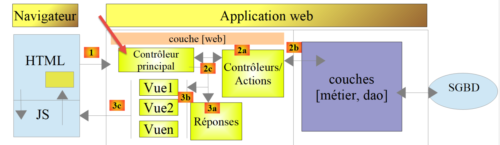
Nous allons présenter les types de réponse possibles [3a]. Celles-ci sont rassemblées dans le dossier [Responses] du projet. Nous avons déjà présenté l'interface [InterfaceResponse], la classe parent [ParentResponse] et la classe [JsonResponse]. Le type de réponse d'une session est fixé par l'action [init-session] qui le place dans la session. Il est représenté par l'énumération [ResponseType] du dossier [Entities] :
Commentaires
- lignes 11-13 : les trois types de réponse. La valeur de chaque cas est la valeur attendue pour le paramètre [type] de l'action [init-session] ;
- lignes 16-23 : la méthode [response] rend l'objet chargé d'envoyer une réponse de ce type. Le type de retour est l'interface [InterfaceResponse] : le code appelant ne connaît que la méthode [send] de l'interface. Le cours PHP 7 associait dans le fichier de configuration chaque type au nom d'une classe (clé [types]) et instanciait celle-ci avec [new $response()] .
Rappelons le code du contrôleur principal qui demande l'envoi de la réponse au client :
- ligne 107 : on détermine le type de la réponse ;
- ligne 109 : on instancie la classe de réponse qui convient et on envoie la réponse au client grâce à sa méthode [send($request, $session, $config, $statusCode, $content, $headers, $logger)] .
23.12.2. La classe [JsonResponse]
Elle a déjà été présentée. Nous redonnons cependant son code pour mieux souligner l'homogénéité des trois classes de réponse :
23.12.3. La classe [XmlResponse]
La classe [XmlResponse] est la suivante :
Commentaires
- ligne 27 : la réponse [$content] est sérialisée en XML par la méthode [arrayToXml] de la classe [XmlUtilitaires] de la version 11. Cette méthode attend un tableau dont les valeurs sont des tableaux ou des valeurs simples : la méthode [toArray] de la classe parent remplace d'abord les objets [Simulation] par le tableau de leurs attributs. L'élément racine du document s'appelle [root], comme dans le cours PHP 7 ;
- ligne 29 : la classe parent envoie la réponse au client, avec le type [application/xml] ;
- ligne 31 : la réponse est loguée en JSON, plus concis que le XML .
Le cours PHP 7 utilisait l'encodeur XML de la bibliothèque [Symfony / Serializer], et un second encodeur, JSON, pour les logs.
23.12.4. Tests [curl]
Nous avons déjà fait tous les tests d'erreurs possibles en JSON. Il n'y a rien à faire de plus en XML. Nous démarrons une nouvelle session (fichier [cookies.txt] supprimé) de type XML :
- lignes 1-7 : la requête de début de session XML, et la réponse XML du serveur. A partir de maintenant, toutes les réponses du serveur seront en XML. On peut reprendre toutes les requêtes déjà utilisées sans les changer et on aura pour chacune d'elles une réponse XML ;
- lignes 9-15 : une authentification réussie ;
- lignes 17-32 : un calcul d'impôt. L'élément [réponse] a pour éléments fils les attributs de la simulation ;
- lignes 34-51 : la liste des simulations. Chaque simulation est un élément [item] de l'élément [réponse] ;
- lignes 53-63 : une liste d'erreurs. Chaque message d'erreur est un élément [item] .
23.12.5. La réponse [HtmlResponse]
Lorsque le type de la session est [html], un objet de type [HtmlResponse] est instancié pour envoyer la réponse au client. Celui-ci va envoyer au client un document HTML qui dépend du code d'état rendu par le contrôleur secondaire qui a traité l'action. Cette correspondance [état => vue] est inscrite dans le fichier de configuration [config.json] de la façon suivante :
Cette configuration se lit de la façon suivante : [‘nom de la vue' => ‘états associés à cette vue'] :
- ligne 56 : si le contrôleur secondaire a rendu un état du tableau [700, 221, 400], alors il faut afficher la vue [vue-authentification.php] ;
- ligne 57 : si le contrôleur secondaire a rendu un état du tableau [200, 300, 341, 350, 800], alors il faut afficher la vue [vue-calcul-impot.php] ;
- ligne 58 : si le contrôleur secondaire a rendu un état du tableau [500, 600], alors il faut afficher la vue [vue-liste-simulations.php] ;
- ligne 60 : si le contrôleur secondaire a rendu un état qui n'est dans aucun des tableaux précédents, alors il faut afficher la vue [vue-erreurs.php] .
Les vues sont rassemblées dans le dossier [Views] du projet. Le code de la classe [HtmlResponse] est le suivant :
Commentaires
- ligne 26 : la vue à afficher dépend du code d'état rendu par le contrôleur qui a traité l'action. Ce code est dans [$content["état"]] ;
- lignes 29-32 : on cherche dans la configuration de l'application la vue qui correspond à cet état. La fonction [array_find_key] (PHP 8.4) rend la clé du premier élément du tableau [$config["vues"]] qui vérifie la condition exprimée par la fonction fléchée, ici le nom de la première vue dont la liste d'états contient [$état]. Si aucun élément ne vérifie la condition, elle rend [null] : on est alors dans une situation d'un code d'état anormal pour l'application HTML et on affiche la vue d'erreurs, grâce à l'opérateur [??]. Le script PHP 7 faisait cette recherche avec une boucle [while] de quinze lignes ;
- lignes 35-38 : on exécute le code PHP de la vue sélectionnée et on met le résultat dans la variable [$html]. Ce code mérite quelques explications. Imaginons que la vue sélectionnée soit [vue-authentification.php] qui présente un formulaire web d'authentification :
- ligne 35 : la fonction [ob_start] démarre ce que la documentation appelle une temporisation de sortie. Tout ce qui est écrit par des opérations [print], [echo], par le texte HTML d'un script inclus... et qui normalement est immédiatement envoyé au client, va dans un tampon de sortie (ob = output buffer) sans être envoyé au client ;
- ligne 36 : on charge la vue [vue-authentification.php] qui est une vue HTML dynamique contenant du code PHP. Se passent alors deux choses. D'abord, le code PHP de la vue est exécuté. Le résultat est une page qui ne contient que du HTML, voire du CSS et du JavaScript, mais plus de PHP. Ensuite, ce code HTML est normalement envoyé au client. C'est en fait le cas de tout texte rencontré par l'interpréteur PHP et qui n'est pas du code PHP. A cause de la temporisation de sortie, ce code HTML est mis dans le tampon de sortie sans être envoyé au client ;
- ligne 38 : la fonction [ob_get_clean] fait deux choses : elle rend le contenu du tampon de sortie, donc la page HTML qu'on y a mise ; elle vide le tampon et arrête la temporisation de sortie. Pour le client, tout se passe comme si rien ne s'était produit : il n'a toujours rien reçu ;
- la vue est incluse par la méthode [send] : le code de la vue a donc accès aux variables locales de la méthode, notamment ses paramètres [$request], [$session], [$config] et [$content]. C'est ainsi que la vue reçoit les données qu'elle doit afficher ;
- [__DIR__] est le chemin absolu du dossier du script en cours d'exécution, ici le dossier [Responses]. Pour trouver la vue, il faut donc remonter d'un niveau [..] puis passer dans le dossier [Views] ;
- ligne 40 : la classe parent envoie la réponse au client, avec le type [text/html] ;
- ligne 42 : on logue en JSON la réponse [$content] fournie par le contrôleur secondaire qui a traité l'action en cours, sans le HTML .
23.12.6. Tests [curl]
Pour tester véritablement le mode HTML de la session, il nous faudrait passer en revue toutes les vues. Nous allons le faire ultérieurement. Nous allons simplement vérifier qu'une action [init-session] réussie (état 700) dans une nouvelle session de type [html] produit bien une réponse HTML. D'après le fichier de configuration, c'est la vue [vue-authentification.php] qui constitue alors la réponse :
- ligne 1 : l'option [-D -] demande à [curl] d'écrire les entêtes HTTP de la réponse sur la sortie standard (le fichier [-]), l'option [-o vue.html] d'écrire le corps de la réponse dans le fichier [vue.html] ;
- ligne 11 : la réponse est un document HTML .
Ouvert dans un navigateur, le fichier [vue.html] affiche la vue d'authentification, qui est présentée maintenant.
23.13. L'application web HTML
23.13.1. Présentation des vues
L'application web HTML utilise quatre vues. La vue d'authentification :
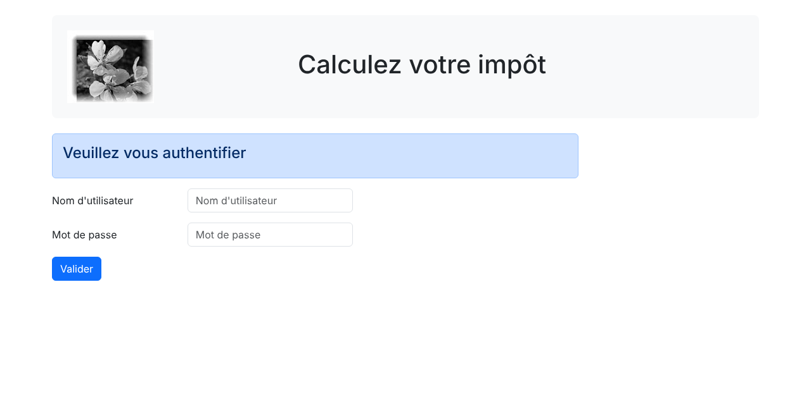
La vue de calcul de l'impôt :
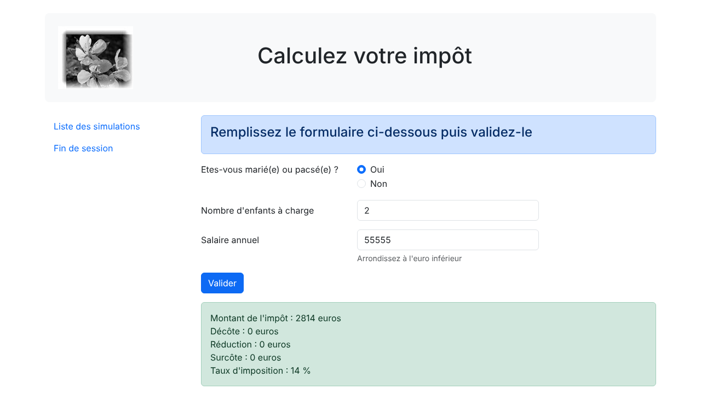
La vue de la liste des simulations :
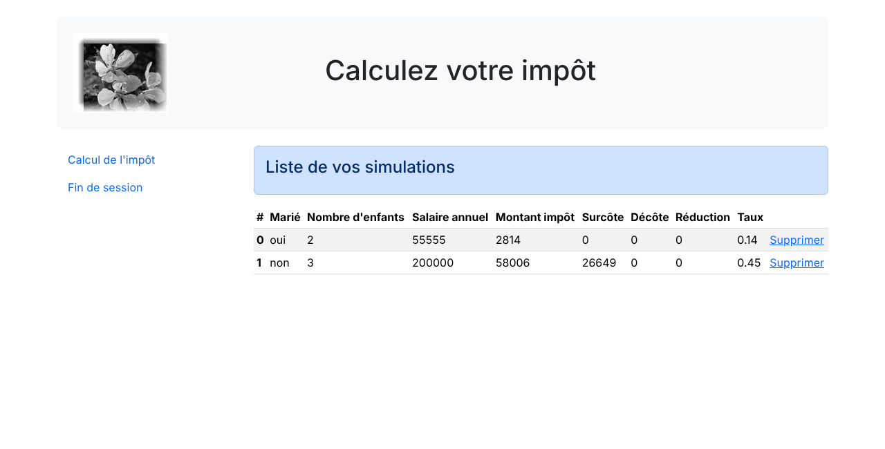
La vue des erreurs inattendues :
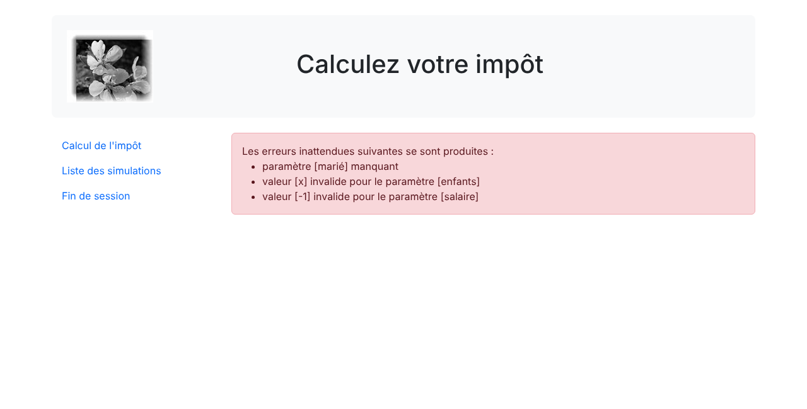
Les vues utilisent le framework CSS [Bootstrap], dans sa version 5.3. Le cours PHP 7 utilisait la version 4.1 : certaines classes CSS ont changé ou disparu, nous le signalerons au passage. Nous allons décrire ces vues l'une après l'autre.
23.13.2. La vue d'authentification
23.13.2.1. Présentation de la vue
La vue d'authentification est la suivante :
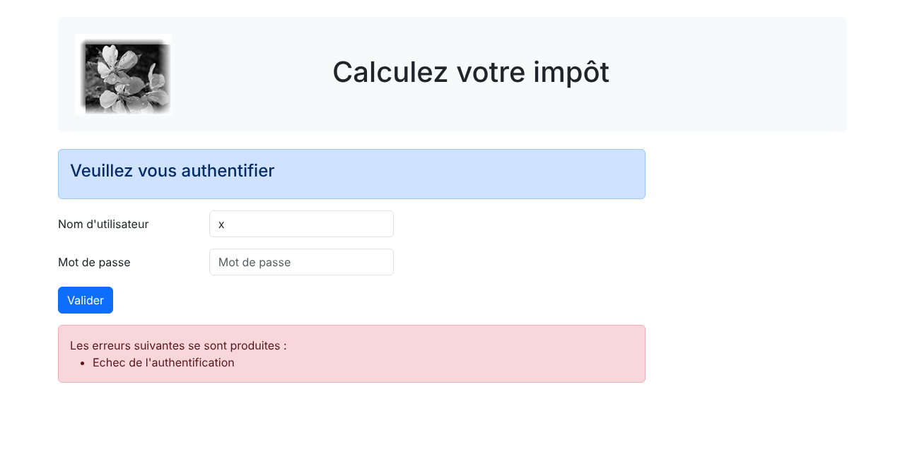
La vue est composée de trois éléments qu'on appellera des fragments :
- le bandeau supérieur, avec le logo et le titre, est généré par le script [v-bandeau.php] ;
- le formulaire d'authentification est généré par le script [v-authentification.php] ;
- le cadre rose des erreurs, affiché seulement lorsqu'il y a des erreurs, est généré par le script [v-erreurs.php] .
La vue d'authentification est générée par la page [vue-authentification.php] suivante :
Commentaires
- lignes 2-7 : la vue est exécutée par l'instruction [require] de la méthode [HtmlResponse::send]. Elle hérite des variables de cette méthode ;
- lignes 13-28 : la partie PHP de la vue calcule le modèle de la vue. Nous y reviendrons un peu plus loin ;
- ligne 30 : un document HTML5 commence avec cette ligne ;
- lignes 31-61 : la page HTML est encapsulée dans les balises [<html>] et [</html>]. L'attribut [lang] indique la langue du document ;
- lignes 32-40 : entête (head) du document HTML :
- ligne 34 : la balise [<meta charset>] indique que le document est codé en UTF-8 ;
- ligne 35 : la balise [<meta name="viewport">] fixe l'affichage initial de la vue : sur toute la largeur de l'écran qui l'affiche (width) à sa taille initiale (initial-scale). La valeur [shrink-to-fit=no] de la version PHP 7 ne sert plus avec les navigateurs actuels ;
- lignes 37-38 : la balise [<link rel="stylesheet">] fixe le fichier CSS qui gouverne l'apparence de la vue. Nous utilisons le framework CSS [Bootstrap] 5.3.8, téléchargé depuis le réseau de distribution [jsDelivr] ([https://getbootstrap.com/docs/5.3/getting-started/introduction/]). L'attribut [integrity] contient l'empreinte SHA-384 du fichier : le navigateur refuse le fichier téléchargé s'il n'a pas cette empreinte, ce qui protège la page contre une modification du fichier sur le réseau de distribution ;
- ligne 39 : la balise [<title>] fixe le titre de la page, affiché dans l'onglet du navigateur ;
- lignes 41-60 : le corps de la page web est encapsulé dans les balises [<body>] et [</body>] ;
- ligne 42 : la balise [<div>] délimite une section de la page affichée. Les attributs [class] utilisés dans la vue se réfèrent tous au framework CSS Bootstrap. La balise [<div class="container">] délimite un conteneur Bootstrap, centré dans la page ;
- ligne 44 : on inclut le fragment [v-bandeau.php] qui génère le bandeau de la page. Nous le décrirons bientôt. Le chemin est construit avec [__DIR__], le dossier [Views] : un chemin relatif simple comme ["v-bandeau.php"] serait cherché d'abord dans les dossiers de la directive [include_path] de PHP, puis dans le dossier du script appelant ([Responses]) et le dossier courant, ce qui est source de surprises ;
- lignes 46-47 : la balise [<div class="row">] délimite une ligne Bootstrap. Ces lignes sont constituées de 12 colonnes. La balise [<div class="col-md-9">] délimite une section de 9 colonnes ;
- ligne 48 : on inclut le fragment [v-authentification.php] qui affiche le formulaire d'authentification ;
- lignes 52-58 : si la liste des erreurs du modèle n'est pas vide, on inclut le fragment [v-erreurs.php] qui affiche les erreurs dans une nouvelle ligne Bootstrap. On utilise ici la syntaxe alternative des structures de contrôle de PHP, [if (...):] ... [endif], plus lisible que les accolades dans une page HTML. Le script PHP 7 écrivait le code HTML des erreurs avec la syntaxe [heredoc] ([print <<<EOT ... EOT;]) .
Retenons de ce code les éléments dynamiques à définir :
- [$modèle->erreurs] : la liste des messages d'erreur, vide s'il n'y a pas d'erreur ;
- [$modèle->titreErreurs] : le texte qui précède la liste des erreurs .
23.13.2.2. Le fragment [v-bandeau.php]
Le fragment [v-bandeau.php] affiche le bandeau supérieur de toutes les vues de l'application web :
Commentaires
- ligne 6 : le bandeau est encapsulé dans une section dont les classes Bootstrap donnent un espacement intérieur (p-4), des marges verticales (my-4), un fond gris clair (bg-body-tertiary) et des coins arrondis (rounded-3). Le cours PHP 7 utilisait la classe [jumbotron] de Bootstrap 4, qui n'existe plus dans Bootstrap 5 : ces quatre classes la remplacent ;
- ligne 7 : une ligne Bootstrap. La classe [align-items-center] centre verticalement le contenu de ses colonnes ;
- lignes 8-10 : une image [<img>] est placée dans les quatre premières colonnes de la ligne ;
- ligne 9 : la syntaxe [<?= expression ?>] est équivalente à [<?php echo expression ?>]. Dit autrement, la valeur de l'attribut [src] sera la valeur de l'expression PHP. Celle-ci est :
- [$modèle->logo ?? "Views/logo.jpg"] : l'URL du logo, si le modèle de la vue en contient une ; sinon l'URL relative [Views/logo.jpg]. Toutes les URL de l'application sont de la forme [http://localhost/php8-oct-2026/scripts-web/impots/version-12/main.php?action=…] : l'URL relative [Views/logo.jpg] est complétée par le navigateur avec le chemin de la page affichée, ce qui donne [http://localhost/php8-oct-2026/scripts-web/impots/version-12/Views/logo.jpg]. Le fragment PHP 7 construisait l'URL absolue du logo à partir des variables du serveur ([REQUEST_SCHEME], [SERVER_NAME], [SERVER_PORT], [REQUEST_URI]) et d'une expression régulière : c'était inutile ;
- [htmlspecialchars(...)] : la fonction [htmlspecialchars] remplace les caractères spéciaux du HTML par leurs entités : [&] devient [&], [<] devient [<], [>] devient [>], ["] devient ["] et ['] devient [']. Ainsi, la valeur écrite dans la page ne peut ni casser l'attribut [src], ni introduire des balises dans la page ;
- lignes 11-13 : les 8 autres colonnes de la ligne (on rappelle qu'il y en a 12 au total) servent à placer un texte en gros caractères (balise [<h1>]) .
Elément dynamique : [$modèle->logo], l'URL de l'image affichée dans le bandeau (facultatif).
Toute valeur dynamique écrite dans une page HTML doit passer par [htmlspecialchars]. C'est la protection contre les attaques XSS (Cross-Site Scripting) : si une valeur saisie par l'utilisateur, ou provenant d'une source non sûre, était écrite telle quelle dans la page, un utilisateur malveillant pourrait y introduire du code JavaScript, par exemple [<script>…</script>], qui serait exécuté par le navigateur de ceux qui affichent la page. Le cours PHP 7 n'échappait aucune valeur. Depuis PHP 8.1, les options par défaut de [htmlspecialchars] ([ENT_QUOTES | ENT_SUBSTITUTE | ENT_HTML401]) codent aussi l'apostrophe : l'appel [htmlspecialchars($valeur)] suffit, que la valeur soit écrite dans un texte ou dans un attribut délimité par des guillemets ou des apostrophes.
23.13.2.3. Le fragment [v-authentification.php]
Le fragment [v-authentification.php] affiche le formulaire d'authentification de l'application web :
Commentaires
- lignes 6-36 : la balise [<form>] délimite un formulaire HTML. Celui-ci a en général les caractéristiques suivantes :
- il définit des zones de saisie (balises [<input>]) ;
- il a un bouton de type [submit] qui envoie les valeurs saisies à l'URL indiquée dans l'attribut [action] de la balise [<form>]. La méthode HTTP utilisée pour requêter cette URL est précisée dans l'attribut [method] de la balise [<form>] ;
- ici, lorsque l'utilisateur va cliquer sur le bouton [Valider], le navigateur va poster les valeurs saisies dans le formulaire à l'URL [main.php?action=authentifier-utilisateur] ;
- les valeurs postées sont les valeurs saisies par l'utilisateur dans les deux zones de saisie. Elles seront postées sous la forme [user=xx&password=yy]. Les noms des paramètres [user, password] sont ceux des attributs [name] des zones de saisie ;
- lignes 8-10 : une section Bootstrap pour afficher un titre sur un fond bleu ;
- lignes 12-20 : la 1re ligne du formulaire. La classe [mb-3] donne une marge inférieure à la ligne. Bootstrap 4 utilisait la classe [form-group], qui n'existe plus dans Bootstrap 5 ;
- ligne 14 : le libellé, sur trois colonnes. L'attribut [for] de la balise [<label>] relie le libellé à l'attribut [id] de la zone de saisie : un clic sur le libellé place le curseur dans la zone de saisie ;
- ligne 16 : la zone de saisie est placée dans un ensemble de quatre colonnes ;
- lignes 17-18 : la balise HTML [<input>] décrit une zone de saisie. Elle a plusieurs attributs :
- [type="text"] : c'est une zone de saisie texte. On peut y taper n'importe quoi ;
- [class="form-control"] : style Bootstrap pour la zone de saisie ;
- [id="user"] : identifiant de la zone de saisie. Cet identifiant est en général utilisé par le CSS et le code JavaScript ;
- [name="user"] : nom de la zone de saisie. C'est sous ce nom que la valeur saisie par l'utilisateur sera postée par le navigateur [user=xx] ;
- [placeholder="invite"] : le texte affiché dans la zone de saisie lorsque l'utilisateur n'a encore rien tapé ;
- [value="valeur"] : le texte affiché dans la zone de saisie dès que celle-ci est affichée, avant donc que l'utilisateur ne saisisse autre chose. Ce mécanisme est utilisé en cas d'erreur pour afficher la saisie qui a provoqué l'erreur. Ici cette valeur sera la valeur de [$modèle->login], échappée par [htmlspecialchars] : un identifiant saisi contenant un guillemet ne peut pas fermer l'attribut [value] ;
- lignes 22-29 : un code analogue pour la saisie du mot de passe. L'attribut [type="password"] fait qu'on a une zone de saisie texte dont les caractères tapés sont cachés ;
- lignes 31-35 : une 3e ligne pour le bouton [Valider] ;
- ligne 33 : parce qu'il a l'attribut [type="submit"], un clic sur ce bouton déclenche l'envoi au serveur, par le navigateur, des valeurs saisies. Les classes CSS [btn btn-primary] affichent un bouton bleu .
Il nous reste à expliquer une dernière chose. L'attribut [action="main.php?action=authentifier-utilisateur"] de la balise [<form>] définit une URL incomplète (elle ne commence pas par http://machine:port/chemin). La vue de l'authentification va être obtenue avec diverses URL :
- [http://localhost/php8-oct-2026/scripts-web/impots/version-12/main.php?action=init-session&type=html] ;
- [http://localhost/php8-oct-2026/scripts-web/impots/version-12/main.php?action=authentifier-utilisateur] .
Ces URL désignent un document [main.php] dans le chemin [http://localhost/php8-oct-2026/scripts-web/impots/version-12]. Ce sera le cas de toutes les URL de cette application. L'URL [main.php?action=authentifier-utilisateur] sera préfixée par ce chemin au moment de l'envoi des valeurs saisies. Celles-ci seront donc postées à l'URL [http://localhost/php8-oct-2026/scripts-web/impots/version-12/main.php?action=authentifier-utilisateur].
23.13.2.4. Le fragment [v-erreurs.php]
Le fragment [v-erreurs.php] affiche une liste de messages d'erreur. Il est utilisé par trois des quatre vues de l'application :
- ligne 5 : les erreurs sont affichées dans un cadre Bootstrap à fond rose ;
- ligne 6 : le texte qui introduit les erreurs ;
- lignes 7-11 : la balise HTML [<ul>] (unordered list) affiche une liste à puces. Chaque élément de la liste a la syntaxe [<li>élément</li>]. La classe [mb-0] supprime la marge inférieure de la liste ;
- lignes 8-10 : la syntaxe alternative de la boucle [foreach]. Chaque message est échappé par [htmlspecialchars] : les messages d'erreur des contrôleurs contiennent les valeurs envoyées par le client ([valeur [x] invalide pour le paramètre [enfants]]). Dans le cours PHP 7, le modèle de la vue contenait la liste HTML des erreurs, construite par concaténation de chaînes [<li>$erreur</li>] : une valeur postée contenant du code JavaScript aurait été exécutée par le navigateur .
Eléments dynamiques : [$modèle->titreErreurs] et [$modèle->erreurs].
23.13.2.5. Tests visuels
On peut procéder aux tests des vues bien avant leur intégration dans l'application. Il s'agit ici de tester leur aspect visuel. Nous rassemblons toutes les vues de test dans le dossier [Tests] du projet. Pour tester la vue [vue-authentification.php], il nous faut créer le modèle de données qu'elle va afficher. Le script [Tests/vue-authentification.php] est le suivant :
Commentaires
- ligne 5 : la vue d'authentification a des parties dynamiques contrôlées par l'objet [$modèle]. On appelle cet objet le modèle de la vue. Selon l'une des deux définitions données pour le sigle MVC, on a là le M du MVC. Il est calculé par la fonction [getModelForThisView]. Une fonction définie au premier niveau d'un script est connue dès le début de l'exécution de celui-ci : on peut l'appeler avant sa définition ;
- lignes 9-17 : le modèle de la vue est un objet de type [stdClass], la classe générique de PHP. Il est obtenu ici en convertissant un tableau associatif en objet avec l'opérateur [(object)] : les clés du tableau deviennent les attributs de l'objet. Le type [stdClass] est le seul type d'objet auquel on peut encore ajouter des attributs non déclarés (cf. chapitre sur les classes). On aurait pu choisir un tableau associatif à la place pour le même résultat ;
- ligne 14 : des valeurs de test pour les éléments dynamiques de la vue. La 2e erreur contient des balises HTML : on vérifiera qu'elles sont affichées telles quelles et non interprétées par le navigateur ;
- ligne 16 : l'URL du logo est relative à l'URL du script de test, situé dans le dossier [Tests] ;
- ligne 32 : le reste du script est celui de la vue [Views/vue-authentification.php]. Les fragments inclus sont ceux du dossier [Views] : ce sont eux que l'on teste. Le cours PHP 7 en recopiait une version dans le dossier [Tests] .
Le test visuel se fait en demandant l'URL [http://localhost/php8-oct-2026/scripts-web/impots/version-12/Tests/vue-authentification.php] dans un navigateur :

On remarquera que la balise [<b>] de la 2e erreur a été affichée et non interprétée : la protection contre les attaques XSS fonctionne. On poursuit ces tests visuels jusqu'à être satisfait du résultat. Pendant la mise au point, on modifie le fichier dans [VS Code] puis on rafraîchit la page du navigateur (F5).
23.13.2.6. Calcul du modèle de la vue
Une fois l'aspect visuel de la vue déterminé, on peut procéder au calcul du modèle de la vue en conditions réelles. Rappelons les codes d'état qui mènent à cette vue. On les trouve dans le fichier de configuration :
Ce sont donc les codes d'état [700, 221, 400] qui font afficher la vue d'authentification. Pour retrouver la signification de ces codes, on peut s'aider des tests [curl] réalisés sur l'application JSON :
- 700 est le code d'état à l'issue d'une action [init-session] réussie : on présente alors le formulaire d'authentification vide ;
- 221 est le code d'état à l'issue d'une action [authentifier-utilisateur] ayant échoué (identifiants non reconnus) : on présente alors le formulaire d'authentification pour qu'il soit corrigé ;
- 400 est le code d'état à l'issue d'une action [fin-session] réussie : on présente alors le formulaire d'authentification vide .
Maintenant que nous savons à quels moments doit être affiché le formulaire d'authentification, on peut calculer son modèle dans [vue-authentification.php] :
Commentaires
- lignes 3-7 : on rappelle les variables héritées de la méthode [HtmlResponse::send] qui fait afficher la vue par un [require] ;
- ligne 10 : la classe Symfony utilisée dans le code de la vue. La vue n'a pas d'espace de noms : sans cette instruction, [Request] désignerait la classe [\Request], qui n'existe pas ;
- lignes 15-28 : la fonction [getModelForThisView] calcule le modèle de la vue. Elle reçoit la requête et la réponse du contrôleur, les seules données dont elle a besoin. Les vues n'ont pas de déclaration [declare(strict_types=1)] : ce sont des pages HTML avec un peu de code PHP ;
- lignes 18-27 : le modèle dépend du code d'état rendu par le contrôleur qui a traité l'action en cours :
- lignes 20-23 : cas de l'authentification erronée : on réaffiche l'identifiant saisi par l'utilisateur, trouvé dans les paramètres postés [$request->request], et on affiche un message d'erreur. L'utilisateur au clavier peut alors réessayer une autre authentification ;
- ligne 26 : états 700 et 400 : un formulaire d'authentification vierge, sans erreur .
Le script PHP 7 utilisait une instruction [switch] qui modifiait un objet [stdClass] créé au début de la fonction.
23.13.2.7. Tests [curl]
Nous avons déjà des requêtes produisant les codes [700, 221, 400] qui affichent la vue d'authentification. Il suffit de les réutiliser dans une session de type [html] et de voir si elles affichent bien la vue d'authentification. Faisons une authentification avec l'utilisateur [x, x], dans la session HTML ouverte au paragraphe précédent :
- ligne 1 : la requête poste la chaîne [user=x&password=x] ;
- lignes 42-43 : l'utilisateur erroné a été réaffiché ;
- lignes 67-71 : un message d'erreur est affiché. L'apostrophe du message a été codée ['] par [htmlspecialchars] .
Dans un navigateur, on obtient la vue suivante :
23.13.2.8. Conclusion
Nous avons pu tester la vue [vue-authentification.php] sans avoir écrit les autres vues. Cela a été possible parce que :
- tous les contrôleurs sont écrits ;
- [curl] nous permet d'émettre des requêtes vers le serveur sans avoir besoin des vues. Lorsqu'on écrit les contrôleurs, il faut être conscient que n'importe qui peut faire cela. Il faut donc être prêt à traiter des requêtes qu'aucune vue ne permettrait. Elles sont fabriquées à la main avec [curl]. On ne doit jamais se dire a priori « cette requête est impossible ». Il faut vérifier .
23.13.3. La vue de calcul de l'impôt
23.13.3.1. Présentation de la vue
La vue de calcul de l'impôt est la suivante :

La vue a cinq parties :
- le bandeau supérieur est généré par le fragment [v-bandeau.php] déjà présenté ;
- le formulaire de calcul de l'impôt est généré par le fragment [v-calcul-impot.php] ;
- un menu présentant deux liens est généré par le fragment [v-menu.php] ;
- le résultat du calcul est affiché dans un cadre vert ;
- les erreurs sont affichées dans un cadre rose par le fragment [v-erreurs.php] .
Les cadres vert et rose ne sont jamais affichés ensemble dans l'application : la copie d'écran ci-dessus est celle du test visuel de la vue, présenté plus loin. La vue de calcul de l'impôt est générée par le script [vue-calcul-impot.php] suivant, dont nous ne montrons pour l'instant que la partie HTML :
Commentaires
Nous ne commentons que les nouveautés :
- ligne 57 : inclusion du bandeau supérieur de la vue ;
- lignes 60-62 : inclusion du menu qui occupera trois colonnes de la ligne Bootstrap qui suit le bandeau ;
- lignes 63-65 : inclusion du formulaire de calcul d'impôt qui occupera les neuf autres colonnes de cette ligne ;
- lignes 68-78 : si le calcul de l'impôt a réussi, la liste [$modèle->résultats] n'est pas vide et le résultat du calcul est affiché dans un cadre vert (classe [alert-success]). Chaque ligne du résultat est suivie d'un passage à la ligne [<br>]. Le cadre est dans une nouvelle ligne Bootstrap et occupe neuf colonnes décalées de trois colonnes (classe [offset-md-3]). Il sera donc immédiatement sous le formulaire de calcul de l'impôt. Le script PHP 7 obtenait le décalage avec une colonne vide [<div class="col-md-3"></div>] ;
- lignes 80-86 : si le calcul de l'impôt a échoué, la liste [$modèle->erreurs] n'est pas vide et les erreurs sont affichées dans un cadre rose, au même endroit, par le fragment [v-erreurs.php] .
23.13.3.2. Le fragment [v-calcul-impot.php]
Le fragment [v-calcul-impot.php] affiche le formulaire de calcul de l'impôt :
Commentaires
- ligne 6 : le formulaire HTML sera posté (attribut [method]) à l'URL [main.php?action=calculer-impot] (attribut [action]). Les valeurs postées seront les valeurs des zones de saisie :
- la valeur du bouton radio coché sous la forme [marié=oui] si le bouton radio [Oui] est coché, [marié=non] si le bouton radio [Non] est coché. [marié] est la valeur de l'attribut [name] des deux boutons, [oui] et [non] les valeurs de leurs attributs [value] ;
- la valeur de la zone de saisie numérique [enfants] sous la forme [enfants=xx] où [xx] est la valeur saisie par l'utilisateur au clavier ;
- la valeur de la zone de saisie numérique [salaire] sous la forme [salaire=xx] ;
- finalement, la valeur postée aura la forme [marié=xx&enfants=yy&salaire=zz] ;
- les valeurs saisies seront postées lorsque l'utilisateur cliquera sur le bouton de type [submit] ligne 48 ;
- lignes 12-26 : les deux boutons radio. La balise [<fieldset>] regroupe des éléments d'un formulaire, la balise [<legend>] leur donne un titre ;
- lignes 16-21 : ce sont des boutons radio à cause de l'attribut [type="radio"]. Les deux boutons radio font partie du même groupe de boutons radio car ils ont le même attribut [name]. Le navigateur s'assure que dans un groupe de boutons radio, un seul est coché à un moment donné. Donc cliquer sur l'un désactive celui qui était coché auparavant ;
- lignes 17-22 : à l'affichage du formulaire, l'un des boutons radio doit être coché : il suffit pour cela d'ajouter l'attribut [checked] à la balise [<input type="radio">] concernée. L'opérateur ternaire écrit cet attribut sur le bouton [Oui] si [$modèle->marié] vaut [oui], sur le bouton [Non] sinon. La valeur écrite étant une constante, il n'y a rien à échapper. Le cours PHP 7 mettait dans le modèle deux variables [checkedOui] et [checkedNon] contenant le texte [checked="checked"] ou une chaîne vide ;
- lignes 31-32 : une zone de saisie numérique ([type="number"]) avec une valeur minimale de 0 ([min="0"]). Dans les navigateurs actuels, cela signifie que l'utilisateur ne pourra saisir qu'un nombre >= 0. La saisie peut aussi être faite avec un variateur qu'on peut cliquer à la hausse ou à la baisse. L'attribut [step="1"] indique que le variateur opère avec des sauts de 1 unité : le variateur ne prendra pour valeur que des entiers progressant de 0 à n avec un pas de 1. Pour la saisie manuelle, cela signifie que les nombres avec virgule ne seront pas acceptés. Lors de certains affichages, la zone de saisie des enfants devra être préremplie avec la dernière saisie faite dans cette zone : c'est le rôle de l'attribut [value], dont la valeur est fournie par [$modèle->enfants] ;
- lignes 39-42 : mêmes explications pour la saisie du salaire que pour celle des enfants. Le texte d'aide sous la zone de saisie a la classe [form-text] ; Bootstrap 4 utilisait une balise [<small>] .
Eléments dynamiques : [$modèle->marié], [$modèle->enfants], [$modèle->salaire].
23.13.3.3. Le fragment [v-menu.php]
Ce fragment affiche un menu à gauche du formulaire de calcul de l'impôt. Son code est le suivant :
Commentaires
- lignes 6-10 : la balise HTML [<nav>] encadre une portion de document présentant des liens de navigation vers d'autres documents. Les classes [nav, flex-column, nav-link] sont des classes Bootstrap qui donnent son apparence au menu : une liste verticale de liens ;
- ligne 7 : le modèle [$modèle->optionsMenu] du fragment est un tableau de la forme [["Liste des simulations" => "main.php?action=lister-simulations", "Fin de session" => "main.php?action=fin-session"]] ;
- ligne 8 : la balise HTML [<a>] introduit un lien de navigation. [$url] est l'URL vers laquelle on navigue lorsqu'on clique sur le lien [$texte]. C'est alors une opération [GET $url] qui est faite par le navigateur. Si [$url] est une URL relative, alors elle est complétée par le chemin de l'URL actuellement affichée par le navigateur. Ainsi, alors que l'URL actuelle du navigateur est du type [http://chemin/main.php?paramètres], le lien [Liste des simulations] mène à [http://chemin/main.php?action=lister-simulations]. Le texte et l'URL sont échappés par [htmlspecialchars] : dans une URL, le caractère [&] qui sépare les paramètres doit être écrit [&] dans un document HTML .
23.13.3.4. Test visuel
Nous créons dans le dossier [Tests] un modèle de test pour la vue [vue-calcul-impot.php] :
Commentaires
- lignes 9-32 : on initialise toutes les parties dynamiques de la vue [vue-calcul-impot.php] et des fragments [v-bandeau.php], [v-calcul-impot.php], [v-menu.php] et [v-erreurs.php] ;
- lignes 15-21 : les lignes du résultat du calcul ;
- ligne 24 : on affiche aussi une liste d'erreurs, pour voir les deux cadres .
On teste la vue [vue-calcul-impot.php] en demandant l'URL [http://localhost/php8-oct-2026/scripts-web/impots/version-12/Tests/vue-calcul-impot.php]. On obtient le résultat présenté au début de ce paragraphe. On travaille sur cette vue jusqu'à ce que le résultat obtenu visuellement nous convienne. On peut ensuite passer à l'intégration de la vue dans l'application web en cours d'écriture.
23.13.3.5. Calcul du modèle de la vue
Une fois l'aspect visuel de la vue déterminé, on peut procéder au calcul du modèle de la vue en conditions réelles. Les codes d'état qui mènent à cette vue sont les codes [200, 300, 341, 350, 800] de la configuration. Pour retrouver la signification de ces codes, on peut s'aider des tests [curl] réalisés sur l'application JSON :
- 200 est le code d'état à l'issue d'une action [authentifier-utilisateur] réussie : on présente alors le formulaire de calcul d'impôt vide ;
- 300 est le code d'état à l'issue d'une action [calculer-impot] réussie. On affiche alors le formulaire de calcul avec les données qui y ont été saisies et le montant de l'impôt. L'utilisateur peut alors refaire un autre calcul ;
- 341 est le code d'état obtenu pour un calcul d'impôt aux paramètres valides lorsque l'absence de connexion au SGBD provoque une erreur ;
- 350 est le code d'état obtenu pour un calcul d'impôt aux paramètres valides lorsque l'absence de connexion au serveur [Redis] provoque une erreur ;
- le code d'état 800 sera présenté ultérieurement. Nous ne l'avons pas encore rencontré ;
- on fait ici l'hypothèse que l'utilisateur utilise un navigateur récent. Ainsi avec le formulaire étudié, il n'est pas possible de taper des nombres négatifs, des chaînes de caractères non numériques, des nombres à virgule dans les champs de saisie [enfants, salaire]. Si ces erreurs se produisent malgré tout (requête fabriquée à la main), on les traitera comme des erreurs inattendues : on affichera alors la vue [vue-erreurs.php] .
Maintenant que nous savons à quels moments doit être affiché le formulaire de calcul de l'impôt, on peut calculer son modèle dans [vue-calcul-impot.php] :
Commentaires
- ligne 17 : pour les états 300, 341 et 350, le formulaire est réaffiché avec les valeurs saisies ;
- lignes 18-20 : les valeurs saisies sont trouvées dans les paramètres postés [$request->request]. Pour les états 200 et 800, le formulaire est vide, avec le bouton [Non] coché ;
- lignes 23-32 : cas du calcul d'impôt réussi. La réponse du contrôleur [$content["réponse"]] est un objet [Simulation] : on construit les lignes du résultat à partir de ses attributs. Le taux est affiché en pourcentage. Une simulation étant un objet, [$simulation->impôt] est interpolé directement dans une chaîne entre guillemets ;
- ligne 35 : cas de l'échec du calcul d'impôt à cause d'une indisponibilité de la base de données ou du serveur [Redis]. La réponse du contrôleur est alors le message d'erreur ;
- lignes 37-40 : les deux options du menu .
23.13.3.6. Tests [curl]
La requête produisant l'état 300 nous permet d'obtenir la vue d'un calcul d'impôt réussi. Dans un navigateur, après une authentification réussie, on remplit le formulaire puis on le valide :
Essayons un cas d'erreur : l'erreur 350 due à une indisponibilité du serveur [Redis] (le port 6380 dans [config.json]) :
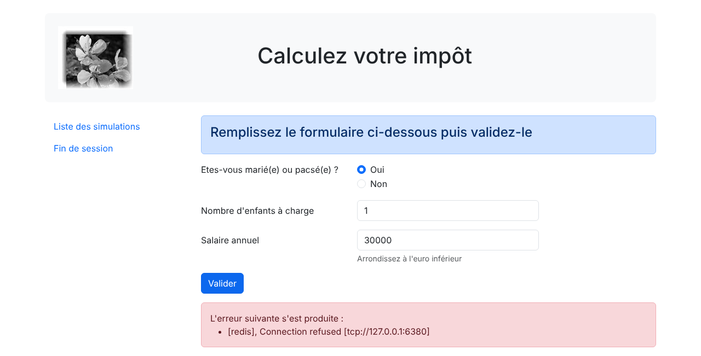
On remarquera que le formulaire a été réaffiché avec les valeurs saisies.
23.13.4. La vue de la liste des simulations
23.13.4.1. Présentation de la vue
La vue qui présente la liste des simulations est la suivante :
La vue générée par le script [vue-liste-simulations.php] a trois parties :
- le bandeau supérieur, généré par le fragment [v-bandeau.php] déjà présenté ;
- un menu présentant deux liens, généré par le fragment [v-menu.php] déjà présenté ;
- le tableau des simulations, généré par le fragment [v-liste-simulations.php] .
La partie HTML du script [vue-liste-simulations.php] est la suivante :
- ligne 33 : inclusion du bandeau de l'application ;
- ligne 37 : inclusion du menu. Il sera affiché sur trois colonnes sous le bandeau ;
- ligne 40 : inclusion du tableau des simulations. Il sera affiché sur neuf colonnes sous le bandeau et à droite du menu .
Le fragment [v-liste-simulations.php] est le suivant :
Commentaires
- lignes 10-45 : un tableau HTML est réalisé avec la balise [<table>]. Les classes Bootstrap lui donnent un aspect compact (table-sm), une ligne en surbrillance sous la souris (table-hover) et des lignes de couleurs alternées (table-striped) ;
- lignes 12-25 : les entêtes des colonnes du tableau se font à l'intérieur d'une balise [<thead>] (table head). La balise [<tr>] (table row) délimite une ligne. La balise [<th>] (table header) définit un entête de colonne. Il y en a dix. [scope="col"] indique que l'entête s'applique à la colonne. [scope="row"] indique que l'entête s'applique à la ligne ;
- lignes 27-44 : la balise [<tbody>] encadre les données affichées par le tableau ;
- ligne 28 : la liste des simulations est trouvée dans le modèle [$modèle->simulations]. C'est une liste d'objets [Simulation] : [$i] est le numéro de la simulation dans la liste ;
- lignes 29-42 : la balise [<tr>] encadre une ligne du tableau ;
- ligne 31 : la balise [<th scope="row">] définit l'entête de la ligne, le numéro de la simulation ;
- lignes 32-39 : chaque balise [<td>] définit une colonne de la ligne. Seul le statut marital, une chaîne de caractères, est échappé : les autres attributs de la simulation sont des nombres, typés comme tels dans la classe [Simulation], qui ne peuvent contenir de caractères spéciaux du HTML ;
- ligne 41 : un lien pour supprimer la simulation. L'URL [main.php?action=supprimer-simulation&numéro=$i] reprend le numéro affiché dans la 1re colonne du tableau. Le navigateur se charge de coder le caractère [é] du nom du paramètre .
23.13.4.2. Test visuel
Nous créons dans le dossier [Tests] un modèle de test pour la vue [vue-liste-simulations.php] :
Commentaires
- lignes 5-7 : le modèle de test contient des objets [Simulation] : on charge la classe et on importe son nom complet ;
- lignes 16-21 : les deux simulations affichées par la table HTML. Elles sont construites avec des arguments nommés (PHP 8.0) : le nom de chaque paramètre précède sa valeur, ce qui rend le code lisible sans connaître l'ordre des paramètres du constructeur ;
- lignes 23-26 : le tableau des options de menu .
Le test visuel, demandé avec l'URL [http://localhost/php8-oct-2026/scripts-web/impots/version-12/Tests/vue-liste-simulations.php], donne le résultat présenté au début de ce paragraphe.
23.13.4.3. Calcul du modèle de la vue
Les codes d'état qui mènent à la vue des simulations sont les codes [500, 600] de la configuration :
- 500 est le code d'état à l'issue d'une action [lister-simulations] réussie : on présente alors la liste des simulations réalisées par l'utilisateur ;
- 600 est le code d'état à l'issue d'une action [supprimer-simulation] réussie. On présente alors la nouvelle liste des simulations obtenue après cette suppression .
Dans les deux cas, la réponse du contrôleur est la liste des simulations. Le modèle de la vue est calculé dans [vue-liste-simulations.php] :
- ligne 12 : le modèle [$modèle->simulations] utilisé par le fragment [v-liste-simulations.php] est la liste d'objets [Simulation] rendue par le contrôleur. Le script PHP 7 transformait chaque objet en tableau associatif à l'aide des getters de la classe [Simulation] : avec des attributs publics, c'est inutile ;
- lignes 14-17 : le modèle [$modèle->optionsMenu] utilisé par le fragment [v-menu.php]. Le lien [Calcul de l'impôt] utilise l'action [afficher-calcul-impot], que nous allons bientôt implémenter .
23.13.4.4. Tests [curl]
L'action [lister-simulations] (état 500) affiche la liste des simulations faites dans la session HTML. Dans un navigateur, après deux calculs d'impôt, on clique sur le lien [Liste des simulations] du menu :
Un clic sur le lien [Supprimer] de la simulation n° 0 (état 600) donne une liste de simulations avec une simulation en moins :
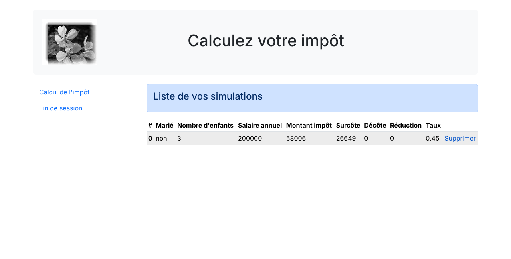
23.13.5. La vue des erreurs inattendues
On appelle ici erreur inattendue une erreur qui n'aurait pas dû se produire dans le cadre d'une utilisation normale de l'application web. Prenons comme exemple la requête suivante, dans une session JSON :
Les paramètres [marié] et [enfants] sont manquants, le paramètre [salaire] est invalide. Or dans le formulaire HTML de l'application web, ce cas ne peut pas se produire :
- tous les paramètres sont présents ;
- le paramètre [marié], qui prend sa valeur dans les attributs [value] de deux boutons radio, a forcément l'une des valeurs [oui] ou [non] ;
- avec un navigateur récent, les attributs [<input type="number" min="0" step="1" …>] font que les saisies pour les enfants et le salaire sont forcément des nombres entiers >= 0 .
Cependant, rien n'empêche un utilisateur d'envoyer à notre serveur, avec [curl] ou avec les outils de développement de son navigateur, une telle requête dans une session HTML. On appellera erreur inattendue une erreur qui ne devrait pas se produire dans le cadre de l'application HTML. Si elle se produit, c'est que probablement quelqu'un essaie de « hacker » l'application. Par souci de pédagogie, on a décidé d'afficher une vue d'erreurs pour ces cas. Dans la réalité, on pourrait réafficher la dernière page envoyée au client. Il suffit pour cela d'enregistrer en session la dernière réponse HTML envoyée. En cas d'erreur inattendue, on renvoie cette réponse. Ainsi l'utilisateur aura l'impression que le serveur ne répond pas à ses erreurs puisque la page affichée ne change pas.
23.13.5.1. Présentation de la vue
La vue qui présente les erreurs inattendues est la suivante :

La vue générée par le script [vue-erreurs.php] a trois parties :
- le bandeau supérieur, généré par le fragment [v-bandeau.php] ;
- un menu présentant trois liens, généré par le fragment [v-menu.php] ;
- la ou les erreurs inattendues, affichées par le fragment [v-erreurs.php] .
La partie HTML du script [vue-erreurs.php] est la suivante :
- ligne 36 : inclusion du bandeau de l'application ;
- ligne 40 : inclusion du menu, sur trois colonnes sous le bandeau ;
- ligne 43 : affichage des erreurs sur neuf colonnes, par le fragment [v-erreurs.php] déjà présenté .
23.13.5.2. Test visuel
Nous créons dans le dossier [Tests] un modèle de test pour la vue [vue-erreurs.php] :
- ligne 12 : la liste des erreurs inattendues ;
- lignes 14-18 : le tableau des trois options de menu .
Le test visuel, demandé avec l'URL [http://localhost/php8-oct-2026/scripts-web/impots/version-12/Tests/vue-erreurs.php], donne le résultat présenté au début de ce paragraphe.
23.13.5.3. Calcul du modèle de la vue
Ce sont les codes d'état absents de la clé [vues] du fichier de configuration qui font afficher la vue des erreurs inattendues. Le code de calcul du modèle de la vue [vue-erreurs.php] est le suivant :
- ligne 11 : on récupère les erreurs dans la réponse du contrôleur ;
- ligne 14 : selon le contrôleur et l'erreur, la réponse est un unique message ou une liste de messages. Le modèle [$modèle->erreurs] utilisé par le fragment [v-erreurs.php] est toujours une liste ;
- lignes 16-20 : le modèle [$modèle->optionsMenu] utilisé par le fragment [v-menu.php] .
23.13.5.4. Tests [curl]
Pour obtenir l'état 338, qui n'est pas un état attendu par l'application HTML, il faut poster une requête fabriquée à la main : marié manquant, enfants et salaire invalides. Avec [curl], dans une session HTML, cela donne la vue des erreurs inattendues. Dans le navigateur, on peut aussi construire un tel formulaire avec les outils de développement (F12). On obtient alors la page suivante :
23.13.6. Implémentation des actions du menu de l'application
Nous allons ici traiter de l'implémentation des actions du menu. Rappelons la signification des liens que nous avons rencontrés :
Vue | Lien | Cible | Rôle |
Calcul de l'impôt | [Liste des simulations] | [main.php?action=lister-simulations] | Demander la liste des simulations |
Calcul de l'impôt | [Fin de session] | [main.php?action=fin-session] | Demander la fin de la session |
Liste des simulations | [Calcul de l'impôt] | [main.php?action=afficher-calcul-impot] | Afficher la vue du calcul d'impôt |
Liste des simulations | [Fin de session] | [main.php?action=fin-session] | Demander la fin de la session |
Erreurs inattendues | [Calcul de l'impôt] | [main.php?action=afficher-calcul-impot] | Afficher la vue du calcul d'impôt |
Erreurs inattendues | [Liste des simulations] | [main.php?action=lister-simulations] | Demander la liste des simulations |
Erreurs inattendues | [Fin de session] | [main.php?action=fin-session] | Demander la fin de la session |
Il faut rappeler qu'un clic sur un lien provoque un GET vers la cible du lien. Les actions [lister-simulations, fin-session] ont été implémentées avec une opération GET, ce qui nous permet de les mettre comme cibles de liens. Lorsque l'action se fait par un POST, l'utilisation d'un lien n'est plus possible sauf à l'associer avec du JavaScript.
Des actions ci-dessus, il apparaît que l'action [afficher-calcul-impot] n'a pas encore été implémentée. C'est une opération de navigation entre deux vues : le serveur JSON ou XML n'a aucune raison de l'implémenter car il n'a pas la notion de vue. C'est le serveur HTML qui introduit cette notion. Il nous faut donc implémenter l'action [afficher-calcul-impot]. Cela va nous permettre de réviser le mode opératoire de l'implémentation d'une action au sein du serveur :
- on ajoute un cas à l'énumération [Action] : [case AfficherCalculImpot = "afficher-calcul-impot";] ;
- on écrit le contrôleur secondaire [AfficherCalculImpotController] dans le dossier [Controllers] ;
- on ajoute son fichier à la clé [dependencies] du fichier [config.json] ;
- on ajoute la branche [Action::AfficherCalculImpot => new AfficherCalculImpotController()] à l'expression [match] du contrôleur principal ;
- on associe le code d'état rendu par le contrôleur, 800, à la vue du calcul de l'impôt dans la clé [vues] de [config.json] .
Le contrôleur [AfficherCalculImpotController] est le suivant :
- ligne 14 : comme les autres contrôleurs secondaires, le nouveau contrôleur implémente l'interface [InterfaceController] ;
- ligne 20 : les changements de vue sont simples à implémenter : il suffit de rendre le code d'état associé à la vue cible, ici le code 800. Sur un changement de vue, il ne peut y avoir d'erreur .
23.13.7. Tests en conditions réelles
Le code a été écrit et chaque action testée avec [curl]. Il nous reste à tester l'enchaînement des vues en situation réelle. Il nous faut un moyen d'initialiser la session HTML. On sait qu'il faut envoyer au serveur les paramètres [action=init-session&type=html]. Pour éviter d'avoir à les taper dans la zone d'adresse du navigateur, on ajoute le script [index.php] à notre application :
- ligne 6 : [header] est une fonction PHP ajoutant un entête HTTP à la réponse. L'entête HTTP [Location: main.php?action=init-session&type=html] demande au navigateur client de se rediriger vers l'URL indiquée. PHP donne alors à la réponse le statut [302 Found] .
Le script [index.php] est demandé avec l'URL [http://localhost/php8-oct-2026/scripts-web/impots/version-12/index.php]. Lorsque le navigateur client va recevoir la redirection vers l'URL relative [main.php?action=init-session&type=html], il va demander l'URL absolue [http://localhost/php8-oct-2026/scripts-web/impots/version-12/main.php?action=init-session&type=html] et la session HTML va démarrer.
L'URL de démarrage peut être simplifiée en [http://localhost/php8-oct-2026/scripts-web/impots/version-12/]. Dans le cas où aucun document n'est précisé dans l'URL, [Apache] utilise le document [index.html] ou [index.php] du dossier. Ici le script [index.php] sera donc utilisé. Vérifions-le avec [curl] :
- ligne 2 : le code HTTP [302] est un code de redirection : on dit au client que l'URL demandée a été déplacée ;
- ligne 6 : la nouvelle URL est précisée par l'entête [Location]. Un navigateur suit cette redirection avec une nouvelle requête GET. [curl] ne le fait que si on lui donne l'option [-L] .
Dans le navigateur, les outils de développement (F12, onglet [Réseau]) montrent les deux requêtes : la 1re reçoit la réponse 302, la seconde la vue d'authentification. Allons-y : nous présentons maintenant quelques enchaînements de vues. Demandons l'URL de démarrage [http://localhost/php8-oct-2026/scripts-web/impots/version-12/] :
L'adresse affichée par le navigateur est celle de la redirection, [main.php?action=init-session&type=html]. Remplissons le formulaire que nous avons reçu :

Après validation, on obtient la vue du calcul de l'impôt (état 200) :

Faisons quelques simulations :

Demandons la liste des simulations :
Supprimons la 1re simulation :
Revenons à la vue du calcul de l'impôt avec le lien [Calcul de l'impôt] (état 800) :
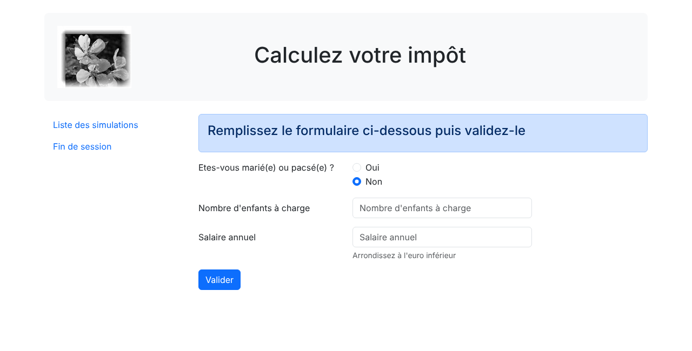
Terminons la session avec le lien [Fin de session] : on revient à la vue d'authentification (état 400) :
Enfin, voici les logs [Data/logs.txt] d'une courte session JSON (init-session, authentifier-utilisateur, calculer-impot) :
Pour chaque requête sont notés l'action demandée, le contrôleur qui l'a traitée et la réponse en JSON, quel que soit le type de la session. Le lecteur est invité à faire d'autres tests.
23.14. Client du service web JSON
23.14.1. Architecture client / serveur
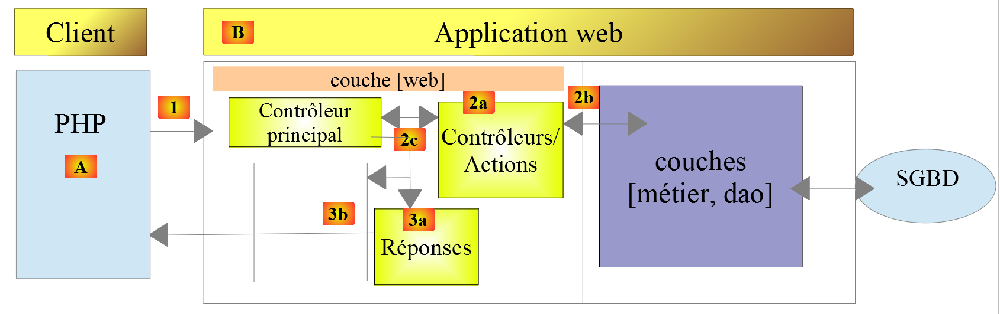
Nous nous intéressons maintenant au client JSON [A] du service web [B]. Le client [A], comme le service web [B], a une structure en couches :

Cette architecture est reflétée par l'organisation du code suivante, dans le dossier [scripts-console/impots/version-12] :
Les autres classes utilisées par le client ont déjà été rencontrées et expliquées. Comme pour les clients précédents, elles sont chargées à partir des dossiers où elles ont été écrites :
Classe | Rôle et origine |
ExceptionImpots | la classe des exceptions de l'application. Version 5, dossier [Entities] |
TaxPayerData | les données d'un contribuable [marié, enfants, salaire]. Version 5, dossier [Entities] |
Utilitaires | lecture et écriture de fichiers JSON. Version 5, dossier [Utilities] |
TraitDao | implémentation des méthodes [getTaxPayersData] et [saveResults]. Version 5, dossier [Dao] |
Simulation | une simulation de calcul d'impôt. Serveur de la version 12, dossier [Entities] |
Le client utilise la classe [Simulation] du serveur : c'est dans cette forme que le serveur envoie ses simulations, et cette classe [readonly] aux attributs publics convient aussi bien au client qu'au serveur. La classe PHP 7 [BaseEntity], dont dérivait la classe [Simulation] du client PHP 7, n'existe plus.
23.14.2. La couche [dao]

23.14.2.1. Interface
L'interface de la couche [dao] est la suivante [Dao/InterfaceClientDao.php] :
Commentaires
- ligne 14 : la méthode [getTaxPayersData] permet d'exploiter le fichier JSON des données des contribuables. Cette méthode est implémentée par le trait [TraitDao] de la version 5 ;
- ligne 18 : la méthode [saveResults] permet d'enregistrer les résultats de plusieurs calculs d'impôt dans un fichier JSON. Là également, cette méthode est implémentée par le trait [TraitDao]. Celui-ci confie le travail à la méthode [Utilitaires::écrireFichierJson], qui sait transformer en JSON tout objet à partir de ses attributs publics : des objets [TaxPayerData] dans les versions précédentes, des objets [Simulation] ici ;
- lignes 21-38 : on a créé une méthode pour chacune des actions acceptées par le service web, à l'exception de l'action [afficher-calcul-impot] qui ne sert qu'à l'application HTML ;
- ligne 24 : l'attribut [SensitiveParameter] (PHP 8.2), déjà rencontré : si une exception est lancée pendant l'exécution de la méthode, la valeur du mot de passe n'apparaîtra pas dans la trace des appels ;
- les commentaires de documentation (PHPDoc) [@return Simulation[]] et [@param Simulation[] $simulations] précisent le contenu des tableaux. PHP ne sait pas typer le contenu d'un tableau : le type [array] ne dit pas que les éléments sont des objets [Simulation]. Ces commentaires le disent à l'éditeur [VS Code] (extension PHP Intelephense), qui peut alors proposer les attributs de [Simulation] lorsqu'on parcourt le tableau .
23.14.2.2. Implémentation
L'interface [InterfaceClientDao] est implémentée par la classe [ClientDao] suivante :
Commentaires
- ligne 19 : la classe utilise le trait [TraitDao] qui implémente deux méthodes de l'interface :
- [getTaxPayersData(string $taxPayersFilename, string $errorsFilename): array] ;
- [saveResults(string $resultsFilename, array $simulations): void] ;
- ligne 22 : le client HTTP de Symfony est créé une seule fois, par le constructeur, et sert à toutes les requêtes. Le client PHP 7 créait un nouveau client HTTP dans chaque méthode ;
- ligne 24 : le cookie de session. Son rôle a été décrit avec le client de la version 9. Il vaut [null] tant que le serveur ne l'a pas envoyé ;
- lignes 30-34 : le constructeur reçoit trois paramètres, dont deux sont promus en attributs :
- l'URL [$urlServer] du service web JSON ;
- les options [$httpClientOptions] du client HTTP. Elles viennent du fichier de configuration : comme pour la version 11, ce sont les options [verify_peer] et [verify_host], qui permettraient de travailler avec le certificat autosigné de [Laragon] si l'URL du serveur utilisait le schéma [https] ;
- un booléen [$verbose] qui, à [true], indique que la classe doit afficher les réponses du serveur sur la console .
La méthode [initSession]
La méthode [initSession] est implémentée de la façon suivante :
L'action [init-session] devant être la 1re action demandée au service web, la méthode [initSession] sera la 1re méthode de la couche [dao] à être appelée.
Commentaires
- ligne 40 : le type de session désiré est passé en paramètre. En l'absence de paramètre, ce sera une session JSON qui sera démarrée. Un client JSON peut demander une session XML : il obtiendra les réponses XML de la version 11, qu'il ne saura pas exploiter ;
- ligne 43 : une requête GET est faite au service web. Ses deux paramètres sont placés dans l'URL : [main.php?action=init-session&type=json]. La réponse du serveur (un simple message) n'est pas exploitée. La méthode privée [sendRequest] lance une exception si le code HTTP de la réponse est différent de 200 OK .
Le client PHP 7 répétait dans chacune de ses méthodes la création du client HTTP, la préparation des options de la requête (dont le cookie de session) et l'appel à la méthode [getResponse]. Nous avons factorisé ce travail dans la méthode privée [sendRequest].
La méthode [sendRequest]
Commentaires
- ligne 51 : la méthode reçoit la méthode HTTP de la requête (GET ou POST), les paramètres de l'URL et, pour un POST, les paramètres postés. Le paramètre [$body] est facultatif : il vaut par défaut le tableau vide ;
- ligne 54 : l'option [query] du client HTTP de Symfony contient les paramètres de l'URL. Symfony les encode lui-même (le paramètre [numéro] de l'action [supprimer-simulation] contient un caractère accentué) ;
- ligne 57 : lorsque l'option [body] est un tableau, Symfony envoie les paramètres postés sous la forme [param1=v1¶m2=v2…] avec l'entête [Content-Type: application/x-www-form-urlencoded], comme le fait un navigateur qui poste un formulaire ;
- lignes 59-61 : à partir de la 2e requête, on renvoie au serveur le cookie de session qu'il nous a envoyé. C'est ainsi que le serveur retrouve la session du client ;
- ligne 64 : la requête est préparée. Le client HTTP de Symfony est asynchrone : la requête est réellement envoyée et la réponse lue lorsqu'on demande le statut, les entêtes ou le contenu de la réponse, ce que fait la méthode [getResponse] ;
- ligne 66 : on rend l'élément [réponse] de la réponse du serveur .
La méthode [getResponse]
La méthode [getResponse] est chargée d'exploiter la réponse du service web :
Commentaires
- ligne 71 : la méthode est privée. Son paramètre est de type [ResponseInterface], l'interface implémentée par toutes les réponses du client HTTP de Symfony. Le client PHP 7 utilisait le type [CurlResponse], la classe de la réponse lorsque le client HTTP est implémenté avec la bibliothèque [curl] : la couche [dao] dépendait inutilement de l'implémentation choisie par Symfony ;
- lignes 73-80 : on récupère le statut, les entêtes et le contenu de la réponse. Le paramètre [false] empêche Symfony de lancer une exception lorsque le statut de la réponse HTTP est dans les domaines [3xx, 4xx, 5xx]. Si le serveur ne peut être joint, Symfony lance une exception de type [TransportExceptionInterface], que l'on transforme en exception [ExceptionImpots] de code 40, comme dans les versions précédentes ;
- lignes 83-84 : si on est en mode [$verbose], on affiche la réponse du serveur sur la console ;
- lignes 88-90 : on récupère le cookie de session. Le client PHP 7 ne le faisait que dans la méthode [initSession]. Nous le faisons après chaque requête, car le serveur de la version 12 change de cookie de session lors de l'action [fin-session] : il envoie deux entêtes [Set-Cookie], le 1er pour supprimer l'ancien cookie ([PHPSESSID=deleted]), le second pour le nouveau. La boucle garde le dernier. L'expression régulière [/^PHPSESSID=([^;]+)/] capture la valeur du cookie jusqu'au 1er point-virgule, qui sépare la valeur des attributs du cookie (path, expires…) ;
- ligne 95 : la chaîne JSON est décodée dans un tableau. L'option [JSON_THROW_ON_ERROR] fait lancer une exception [JsonException] si la chaîne n'est pas du JSON valide ;
- lignes 99-100 : si la réponse n'est pas un objet JSON ayant la clé [réponse], ce n'est pas une réponse de notre service web. On lance une exception de code 41 ;
- lignes 103-109 : si le statut de la réponse HTTP du serveur est différent de 200, on lance une exception de code 42 dont le message est la réponse JSON du serveur, complétée par le statut HTTP, comme pour les clients précédents. L'opérateur [+] appliqué à deux tableaux associatifs les réunit : le tableau [["statut HTTP" => $statusCode]] est complété par les clés [action, état, réponse] du tableau [$array] ;
- ligne 112 : les informations utiles sont dans [$array["réponse"]]. Selon l'action, c'est un message, un tableau associatif (une simulation) ou une liste de tableaux associatifs (des simulations). Le type de retour de la méthode est donc [mixed] .
La méthode [authentifierUtilisateur]
La méthode [authentifierUtilisateur] est la suivante :
Commentaires
- ligne 121 : la requête du client est un POST ;
- ligne 122 : l'unique paramètre de l'URL ;
- ligne 123 : les paramètres du POST ;
- la réponse n'est pas exploitée : on sait qu'en cas d'erreur (code HTTP différent de 200), la méthode [getResponse] lance elle-même une exception .
La méthode [calculerImpot]
Commentaires
- ligne 134 : l'unique paramètre de l'URL ;
- ligne 135 : les trois paramètres du POST ;
- ligne 138 : si on arrive là, c'est que la méthode [getResponse] n'a pas lancé d'exception. La réponse est le tableau associatif des attributs d'une simulation. La méthode [toSimulation], présentée un peu plus loin, en fait un objet [Simulation] .
La méthode [listerSimulations]
Commentaires
- ligne 146 : une requête GET avec l'unique paramètre [action] ;
- ligne 148 : la transformation de la réponse en liste d'objets [Simulation] est confiée à la méthode privée [getSimulations] .
La méthode [getSimulations]
Commentaires
- ligne 153 : la méthode reçoit la réponse du serveur, une liste de tableaux associatifs ayant chacun tous les attributs d'une simulation. Elle n'utilise aucun attribut de l'objet : elle est statique et appelée par [self::getSimulations(...)] ;
- ligne 155 : la fonction [array_map] applique la méthode [toSimulation] à chacun des éléments de la liste et rend la liste des résultats. La syntaxe [self::toSimulation(...)] (PHP 8.1, « first-class callable syntax ») crée une fonction anonyme (une [Closure]) à partir de la méthode [toSimulation]. Elle remplace l'ancienne syntaxe [[self::class, "toSimulation"]] ;
- ligne 162 : l'opérateur [...] décompose le tableau [$attributs] en arguments du constructeur. Depuis PHP 8.1, les clés chaînes de caractères du tableau deviennent des arguments nommés : la clé [marié] alimente le paramètre [$marié], la clé [impôt] le paramètre [$impôt], etc., quel que soit l'ordre des clés dans le tableau. Si le serveur envoyait une clé inconnue du constructeur, PHP lancerait une erreur [Error] ;
- le client PHP 7 utilisait la méthode [setFromArrayOfAttributes] de la classe [BaseEntity] pour initialiser l'objet [Simulation] avec les éléments du tableau. On remarquera que la sérialisation JSON de ses objets [Simulation] contenait l'attribut parasite [arrayOfAttributes] hérité de la classe [BaseEntity]. Ce n'est plus le cas .
La méthode [supprimerSimulation]
Commentaires
- ligne 170 : on fait une requête GET avec deux paramètres dans l'URL ;
- ligne 172 : après une suppression, le serveur rend la nouvelle liste des simulations. On rend cette liste .
La méthode [finSession]
Une session de travail avec le service web se termine normalement par l'appel à la méthode [finSession] :
Commentaires
- ligne 180 : on fait une requête GET avec l'unique paramètre [action]. Une exception sera lancée si le code HTTP de la réponse est différent de 200. Le serveur répond avec un nouveau cookie de session que la méthode [getResponse] mémorise : les requêtes suivantes se feront dans la nouvelle session, où l'utilisateur n'est pas authentifié .
23.14.3. La couche [métier]
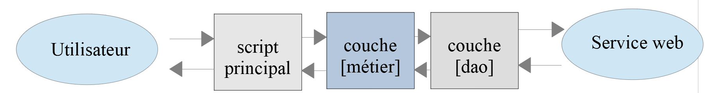
23.14.3.1. L'interface
L'interface de la couche [métier] est la suivante [Metier/InterfaceClientMetier.php] :
Commentaires
- ligne 13 : seule la méthode [executeBatchImpots] est spécifique à la couche [métier]. Toutes les autres appartiennent à la couche [dao] qui les implémente ;
- ligne 16 : le fichier des résultats est facultatif. S'il est absent, les résultats ne sont pas enregistrés. Le paramètre est de type [?string] (chaîne ou [null]). Nous l'avons placé en dernière position : un paramètre facultatif doit suivre les paramètres obligatoires. Le cours PHP 7 déclarait [string $resultsFileName] et passait [NULL] à la méthode, ce qui provoque une erreur de type [TypeError] en mode [strict_types=1] .
23.14.3.2. La classe [ClientMetier]
La classe implémentant la couche [métier] est la suivante :
Commentaires
- ligne 12 : pour se construire, la couche [métier] a besoin d'une référence sur la couche [dao]. Elle est injectée par le constructeur et devient un attribut en lecture seule par promotion du paramètre ;
- lignes 18-22 : seule la méthode [executeBatchImpots] est spécifique à la couche [métier]. L'implémentation des autres méthodes délègue le travail à faire aux méthodes de mêmes noms de la couche [dao] ;
- ligne 25 : on s'adresse à la couche [dao] pour obtenir dans un tableau d'objets de type [TaxPayerData] les données des contribuables ;
- lignes 27-34 : on calcule l'impôt de chacun des contribuables du tableau [$taxPayersData]. La fonction fléchée (PHP 7.4) appelée par [array_map] rend pour chaque contribuable l'objet [Simulation] rendu par le serveur. Chaque calcul est aussi mémorisé par le serveur dans la session de l'utilisateur ;
- lignes 36-37 : les résultats ne sont enregistrés dans un fichier JSON que si un nom de fichier a été donné .
Note : la couche [métier] ne fait quasiment rien. On pourrait décider de la supprimer et de tout rassembler dans la couche [dao].
23.14.4. Le script principal
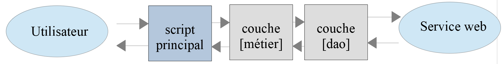
Le script principal est configuré par le fichier [Data/config.json] suivant :
- ligne 2 : l'URL du contrôleur principal du serveur de la version 12. Nous utilisons le schéma [http], comme depuis la version 8 (cf. le paragraphe « Pourquoi [http] et non [https] ? » du chapitre de la version 8) ;
- ligne 3 : les identifiants de l'utilisateur ;
- ligne 7 : les options du client HTTP, déjà utilisées par le client de la version 11 : si l'URL utilise le schéma [https], le certificat autosigné du serveur n'est pas vérifié ;
- lignes 14-24 : les fichiers de l'application à charger, relatifs au dossier [version-12] du client. On y trouve la classe [Simulation] du serveur. Le cours PHP 7 donnait aussi un dossier racine absolu [rootDirectory] et le chemin absolu de l'autoloader de Composer. Comme pour les versions précédentes, les chemins sont maintenant calculés à partir de la constante [__DIR__] : le dossier [php8-oct-2026] peut être déplacé sans modifier la configuration .
Le script principal [Main/main.php] est le suivant :
Commentaires
- lignes 10-15 : exploitation du fichier de configuration [config.json] ;
- lignes 18-20 : chargement de toutes les dépendances ;
- lignes 24-26 : les chemins absolus des fichiers de données ;
- lignes 29-31 : construction des couches [dao] et [métier]. Le paramètre [$verbose] est passé par son nom : [verbose: true] est plus parlant qu'un simple [true] ;
- ligne 36 : initialisation d'une session JSON ;
- ligne 38 : on s'authentifie auprès du serveur ;
- lignes 40-43 : calcul de l'impôt d'une série de contribuables. On ne sauvegarde pas les résultats : grâce aux arguments nommés, on omet simplement le paramètre facultatif [resultsFileName] ;
- ligne 45 : on demande les résultats de tous ces calculs ;
- ligne 47 : on supprime la simulation n° 1 (la 2e de la liste) ;
- ligne 49 : on sauvegarde les simulations qui restent ;
- ligne 52 : on termine la session. Le serveur supprime la session et en démarre une nouvelle ;
- ligne 54 : on demande la liste des simulations. Dans la nouvelle session, l'utilisateur n'est pas authentifié. On doit donc avoir une exception disant qu'on n'est pas authentifié .
Le fichier [taxpayersdata.json] est celui des versions précédentes :
Il y a 12 contribuables dont 1 est incorrect. Cela fait donc 11 simulations au total. L'une d'elles va être supprimée. Il doit en rester 10.
Les résultats console sont les suivants (en mode verbose, les réponses JSON du serveur sont affichées sur la console) :
- lignes 2-3 : la session JSON est démarrée et l'utilisateur authentifié ;
- lignes 4-14 : les 11 calculs d'impôt. Le contribuable erroné n'a pas été envoyé au serveur ;
- ligne 15 : la liste des 11 simulations ;
- ligne 16 : la liste des 10 simulations restantes après la suppression de la simulation n° 1 (impôt 1384) ;
- ligne 17 : le message du script principal après l'enregistrement des résultats ;
- ligne 18 : la fin de session ;
- lignes 19-20 : la liste des simulations est refusée (état 104) : dans la nouvelle session, l'utilisateur n'est pas authentifié. Le client PHP 7 obtenait ici l'état 103 (pas de session en cours) parce qu'il continuait à envoyer l'ancien cookie de session. Le serveur de la version 12 garde le type de la session lors de l'action [fin-session] : le client reste donc un client JSON, mais doit s'authentifier de nouveau .
Après exécution du script principal, le fichier JSON [results.json] est le suivant :
Il y a bien 10 simulations. Le fichier JSON [errors.json] a le contenu suivant :
23.14.5. Tests [PHPUnit]
Comme pour les précédents clients, le client de la version 12 peut faire l'objet de tests [PHPUnit]. La classe de test [Tests/ClientMetierTest.php] est analogue à celle des précédents clients :
1 2 3 4 5 6 7 8 9 10 11 12 13 14 15 16 17 18 19 20 21 22 23 24 25 26 27 28 29 30 31 32 33 34 35 36 37 38 39 40 41 42 43 44 45 46 47 48 49 50 51 52 53 54 55 56 57 58 59 60 61 62 63 64 65 66 67 68 69 70 71 72 73 74 75 76 77 78 79 80 81 82 83 84 85 86 87 88 89 90 91 92 93 94 95 96 97 98 99 100 101 102 103 104 105 106 107 108 109 110 111 112 113 114 115 116 117 118 119 120 121 122 | |
Commentaires
- lignes 31-37 : la configuration du client est lue et les dépendances chargées une seule fois, avant le 1er test ;
- lignes 43-51 : on rappelle que la méthode [setUp] est exécutée avant chaque test. Elle construit les couches [dao] (en mode non verbeux) et [métier], puis initialise une session JSON et s'authentifie. Chaque test travaille ainsi dans sa propre session, sans dépendre des autres tests. Le cours PHP 7 faisait ce travail dans le constructeur de la classe de test, ce que PHPUnit ne permet plus ;
- lignes 55-69 : le fournisseur de données des versions précédentes. Pour chaque contribuable, on a l'impôt du simulateur officiel et les cinq résultats attendus [impôt, surcôte, décôte, réduction, taux] ;
- ligne 82 : on construit la simulation attendue et on la compare à celle rendue par le serveur. Appliquée à deux objets, la méthode [assertEquals] vérifie qu'ils sont de la même classe et que leurs attributs sont égaux. L'opérateur [...] décompose ici une liste : ses éléments sont passés aux cinq derniers paramètres du constructeur, dans l'ordre ;
- lignes 86-97 : un test des actions [lister-simulations] et [supprimer-simulation]. On fait deux simulations, on supprime la 1re et on vérifie qu'il reste la seconde. Puis on demande la suppression d'une simulation qui n'existe pas : le serveur doit répondre par l'état 628 ;
- lignes 101-105 : après la fin de session, la liste des simulations doit être refusée avec l'état 104 ;
- lignes 110-119 : une méthode utilitaire qui vérifie que l'action [$action], passée sous forme de fonction anonyme, lance une exception [ExceptionImpots] de code 42 avec le statut HTTP et l'état attendus. Le message de l'exception étant la réponse JSON du serveur, on le décode pour vérifier ses éléments. Si aucune exception n'est lancée, la méthode [fail] fait échouer le test .
Les résultats du test sont les suivants :
Beaucoup d'autres tests devraient être faits :
- tester les différentes méthodes de la couche [dao] ;
- tester les états rendus par le serveur web. Ces états sont importants puisque leur valeur décide de la page HTML à afficher .